Slide 1 — Basic Knowledge · 46 หน้า · คลิป Class 1 และช่วงต้นของ Class 2, 3
สถิติทั่วไปใช้ข้อมูลที่เก็บครั้งเดียวจากหลายหน่วยซึ่งไม่เกี่ยวกัน วิชานี้ใช้ข้อมูลที่เก็บจากสิ่งเดียวซ้ำตามเวลา ค่าวันนี้จึงเกี่ยวกับค่าเมื่อวาน บทนี้ตอบสามคำถาม
วิธีอ่าน: ข้อความไฮไลต์สีเหลืองคือถ้อยคำบนสไลด์ ตัวเลขยกเล็กท้ายประโยค1 คือที่มาจากคลิป (คลาสและนาที) รวมไว้ที่ท้ายบท
| หัวข้อ | เนื้อหา | สไลด์ |
|---|---|---|
| 1 | ข้อมูลตามเวลาต่างจากข้อมูลทั่วไปอย่างไร | 2–6 |
| 2 | ประเภทของข้อมูลอนุกรมเวลา และเป้าหมายของการวิเคราะห์ | 6–8 |
| 3 | องค์ประกอบสี่อย่าง: trend, seasonal, cycle, irregular | 10–18 |
| 4 | ความแปรปรวนคงที่และไม่คงที่ | 19 |
| 5 | Signal กับ noise และ decomposition แบบบวกกับแบบคูณ | 20–24 |
| 6 | ทบทวนตัวแปรสุ่ม: E, Var, Cov, correlation | 26–29 |
| 7 | อนุกรมเวลาคือ stochastic process | 30–34 |
| 8 | Mean function, autocovariance และ ACF | 35–37 |
| 9 | White noise | 38–44 |
| 10 | Example 1.9: ค่าเฉลี่ยเคลื่อนที่สามจุด | 45 |
| 11 | Homework: random walk with drift | 46 |
| 12 | ข้อสอบเก่าที่ออกจากบทนี้ และแม่แบบคำตอบ | — |
| 13 | แบบฝึกห้าแบบ: คำนวณ ทฤษฎี อธิบาย อ่านผล R และรันโค้ด | — |
ข้อมูลในสถิติทั่วไปเรียกว่า cross-sectional เขียนเป็น \(X_i\) โดย i คือหน่วยที่ 1, 2, …, n ส่วนอนุกรมเวลาเขียนเป็น \(X_t\) โดย t คือจุดเวลาที่ 1, 2, …, n ตัวห้อยต่างกันแค่ตัวอักษร แต่ความหมายต่างกันมาก3
วิธีแยกสองแบบที่ง่ายที่สุดคือลองสลับลำดับข้อมูล4
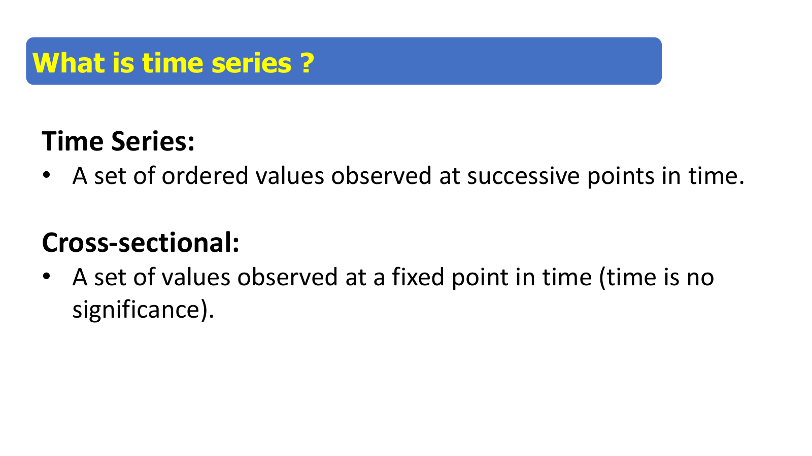
นิยามบนสไลด์: อนุกรมเวลาคือค่าที่ ordered และสังเกต ณ จุดเวลาที่ต่อเนื่องกัน ส่วน cross-sectional สังเกต ณ จุดเวลาเดียว (time is no significance) คือเวลาไม่มีบทบาท เทียบได้กับวิดีโอกับภาพถ่ายหมู่ วิดีโอสลับเฟรมแล้วเรื่องเพี้ยน ภาพหมู่จะเรียงใครยืนตรงไหนก็ได้ข้อมูลเท่าเดิม
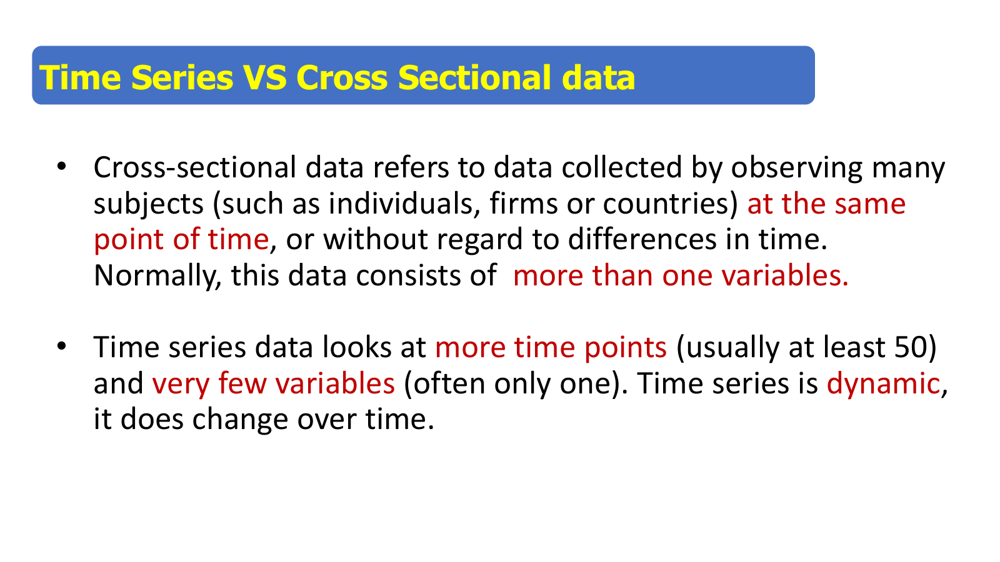
หน้านี้เพิ่มสองเรื่อง
| Cross-sectional | Time series | |
|---|---|---|
| สัญลักษณ์ | \(X_i\), i คือหน่วยที่ i | \(X_t\), t คือจุดเวลาที่ t |
| เก็บเมื่อใด | ครั้งเดียว | หลายจุดเวลาต่อเนื่อง อย่างน้อยราว 30–50 จุด |
| จำนวนตัวแปร | มักหลายตัว | มักตัวเดียว |
| สลับแถวได้ไหม | ได้ ผลไม่เปลี่ยน | ไม่ได้ ลำดับคือข้อมูล |
| ความสัมพันธ์ระหว่างแถว | อิสระต่อกัน | ค่าใกล้กันในเวลามักเกี่ยวกัน |
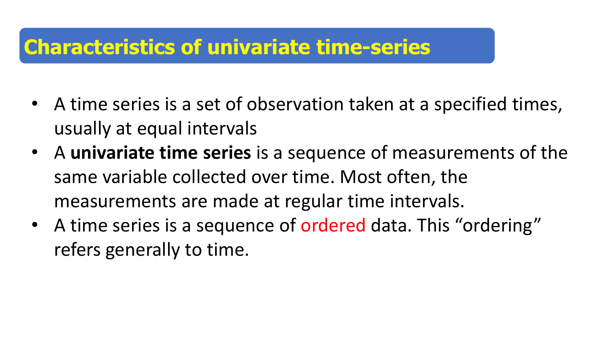
ลักษณะของอนุกรมเวลาตัวแปรเดียว (univariate) มีสามข้อ
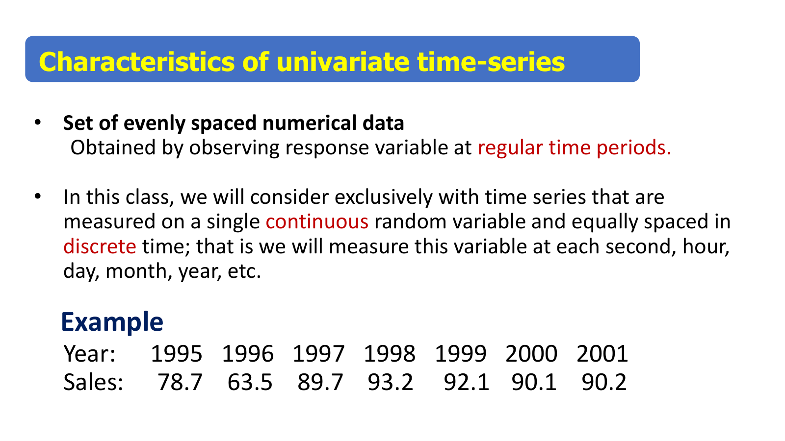
ขอบเขตของวิชา: ศึกษาอนุกรมที่วัดจาก a single continuous random variable และห่างเท่ากันใน discrete time คือวัดที่ regular time periods.
ตารางนี้มีตัวแปรตัวเดียวคือ Sales ส่วน Year ไม่ใช่ตัวแปร เป็นแค่ตัวบอกเวลา (time indicator) ค่า 78.7 คือ \(X_1\), 63.5 คือ \(X_2\), 89.7 คือ \(X_3\) ต่อไปเรื่อย ๆ8 วิชานี้เริ่มนับที่ \(X_1\) ตามตำรา (บางแหล่งเริ่มที่ \(X_0\)) ข้อนี้สำคัญเมื่อทำ regression ใน Lesson 3: ตัวแปรต้น t = 1, 2, 3 เป็นแค่ลำดับเวลา ไม่มีความหมายเชิงเหตุและผล
ตัวอย่างว่าลำดับคือข้อมูล: ยอดขายปี 1995–2001 คือ 78.7, 63.5, 89.7, 93.2, 92.1, 90.1, 90.2 อ่านได้ว่าตกหนักในปี 1996 แล้วฟื้นจนทรงตัวราว 90 ถ้าย้าย 63.5 ไปไว้ปี 2001 ตัวเลขชุดเดิมจะเล่าว่ายอดทรงตัวหลายปีแล้วร่วงในปีสุดท้าย ค่าเฉลี่ยและความแปรปรวนเท่ากันทุกประการ แต่การพยากรณ์ปี 2002 ต่างกันมาก
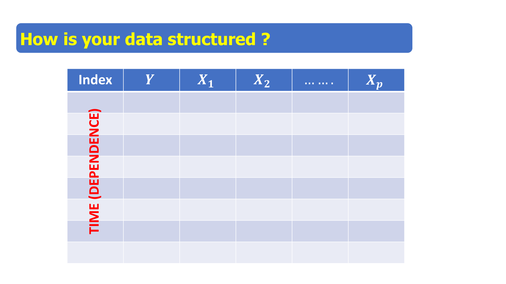
ตารางข้อมูลทั่วไปมีตัวแปรตาม \(Y\) และตัวแปรต้น \(X_1,\dots,X_p\) แต่ละแถวอิสระต่อกัน สไลด์เพิ่มคอลัมน์ TIME (DEPENDENCE) คือแต่ละแถวขึ้นกับแถวก่อนหน้า วิธีสถิติที่สมมติว่าแถวอิสระต่อกันจึงใช้ตรง ๆ ไม่ได้ ต้องมีเครื่องมือวัดว่าค่าของตัวเองในเวลาหนึ่งเกี่ยวกับค่าในอีกเวลาหนึ่งมากเพียงใด คือ autocovariance และ ACF ในหัวข้อ 8
อนุกรมเวลาที่จะเจอในวิชามีสี่ประเภท9
| ประเภท | หน้าตาข้อมูล | เป้าหมาย | เรียนเมื่อใด |
|---|---|---|---|
| 1. Univariate | คอลัมน์เดียว \(X_1,\dots,X_n\) | อธิบายและพยากรณ์ตัวมันเอง | ครึ่งแรก Lesson 1–9 |
| 2. Multivariate ที่ทุกตัวสำคัญเท่ากัน | หลายคอลัมน์ ทุกคอลัมน์เป็นตัวแปรตาม | ดูว่าหลายอนุกรมส่งผลถึงกันอย่างไร | VAR ในบทท้าย |
| 3. มี Y เป็นหลัก และ X เป็นตัวเสริม | Y และ \(X_1,X_2,X_3\) ทุกตัวเป็นอนุกรมเวลา | พยากรณ์ Y โดยใช้ X ช่วยให้แม่นขึ้น X ไม่ค่อยถูกพยากรณ์ | ARIMAX ในบทท้าย |
| 4. Panel data | หลายบริษัท แต่ละบริษัทเก็บ X, Y หลายปี | เทียบหลายหน่วยตามเวลา | อาจไม่ได้สอน "หัวข้อใหญ่มาก" |
จุดที่สับสนบ่อย
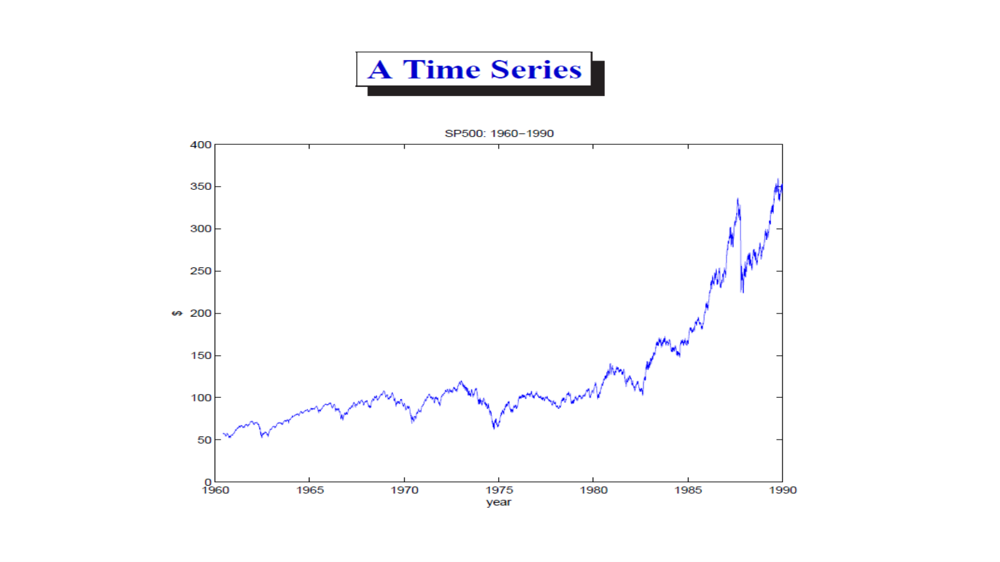
กราฟเส้นที่มีจุดถี่แบบนี้เรียกว่า time series plot ใช้ดูภาพรวม ยังไม่ให้โมเดล12 จากดัชนี S&P 500 อ่านได้สามเรื่อง ซึ่งจะมีชื่อเรียกในหัวข้อ 3 และ 4
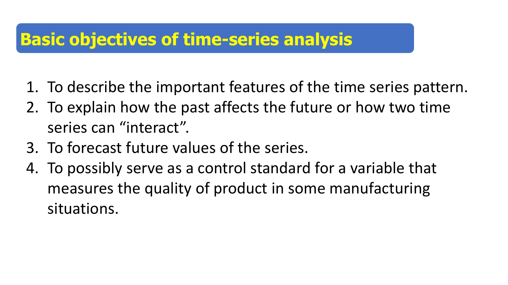
เป้าหมายของการวิเคราะห์อนุกรมเวลามีสี่ข้อ
Forecast มักหมายถึงการพยากรณ์ไปในอนาคต ส่วน predict ใช้ในความหมายกว้างกว่า การพยากรณ์แบ่งเป็นสองแบบ ธุรกิจส่วนใหญ่ใช้แบบระยะสั้น13
| แบบ | ระยะ | ใช้โดย |
|---|---|---|
| ระยะสั้น (short term) | 1–2 จุดเวลา | ธุรกิจส่วนใหญ่ เช่น พยากรณ์สัปดาห์หน้าเพื่อเตรียมสินค้าให้ทัน |
| ระยะยาว (long term) | เช่น 10 เดือนข้างหน้า | ภาครัฐที่ต้องการภาพในอนาคต |
เหตุผลเชิงทฤษฎีอยู่ในหัวข้อ 11: ยิ่งพยากรณ์ไกล ความไม่แน่นอนยิ่งโต
กราฟอนุกรมเวลาเส้นหนึ่งมักมีหลายอย่างซ้อนกัน แยกได้เป็นองค์ประกอบหลักสามถึงสี่อย่าง จัดเป็นสองกลุ่ม14
งานของทั้งวิชาคือแยกสองกลุ่มนี้ออกจากกัน เหมือนฟังวิทยุที่สัญญาณไม่ชัด เพลงคือ signal ที่ทำนายท่อนต่อไปได้ เสียงซ่าคือ noise ที่ทำนายไม่ได้ บอกได้แค่ว่าดังประมาณไหน
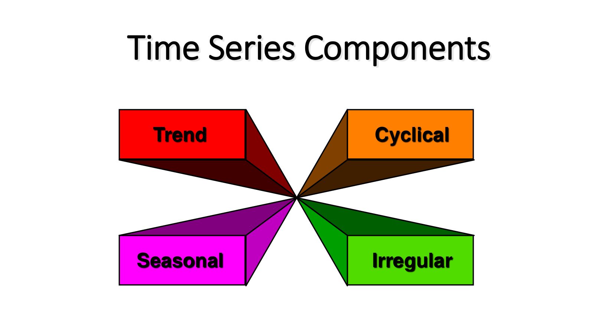
ตัวอย่างร้านค้าร้านหนึ่งที่มีครบทั้งสี่องค์ประกอบ
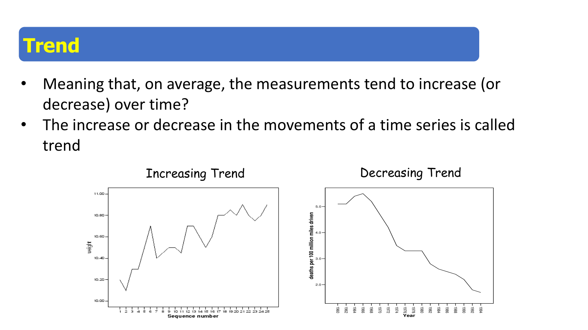
Trend คือค่าโดยเฉลี่ยมีแนวโน้มเพิ่มขึ้นหรือลดลงตามเวลา ให้ดูภาพรวม (overall) ไม่ใช่ทีละจุด เริ่มจาก linear trend คือเส้นตรงก่อน ข้อมูลที่ยาวมากอาจมีหลาย trend ผสมกัน15
การลดลงชั่วคราวระหว่างทางไม่ได้ลบล้าง trend เหมือนเดินขึ้นเขาที่มีทางลงสั้น ๆ เป็นช่วง ปลายทางก็ยังสูงกว่าต้นทาง
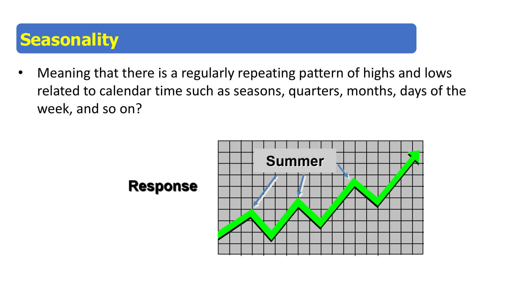
Seasonality คือรูปแบบสูงต่ำที่ซ้ำสม่ำเสมอและ related to calendar time คือผูกกับปฏิทิน เช่น ฤดู ไตรมาส เดือน หรือวันในสัปดาห์ ในกราฟนี้ยอดของทุกรอบตรงกับฤดูร้อน จึงทำนายตำแหน่งยอดล่วงหน้าได้ และยอดแต่ละรอบสูงกว่ารอบก่อน แปลว่ามี trend ขาขึ้นซ้อนอยู่ องค์ประกอบหลายอย่างอยู่ในเส้นเดียวกันได้
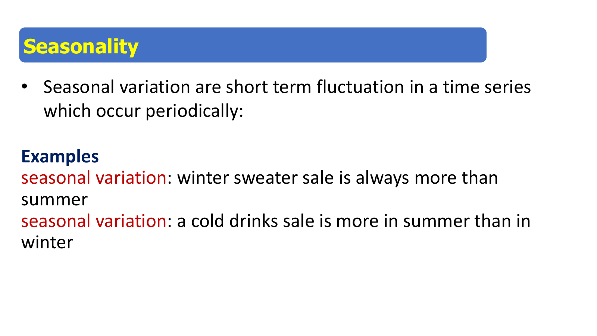
ตัวอย่างบนสไลด์ทั้งสองมีรอบหนึ่งปี และยอดเกิดในช่วงเดิมของปฏิทิน
การใช้ไฟฟ้าก็เป็นแบบนี้ หน้าร้อนคนเปิดแอร์มาก เกิดเป็นรอบทุกปี16 ข้อมูลนี้กลับมาอีกใน Lesson 7
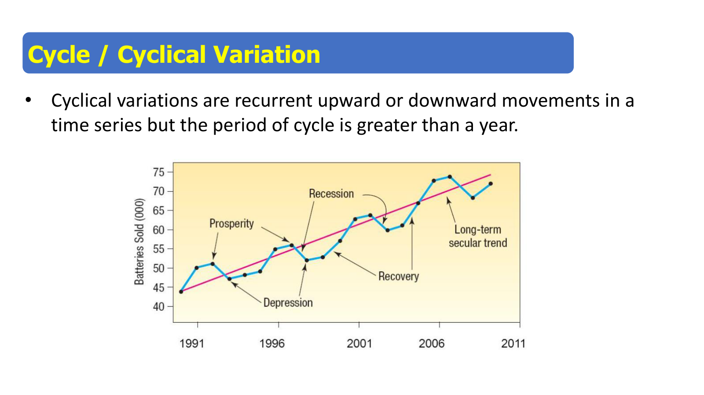
Cycle คือการขึ้นลงที่เกิดซ้ำ แต่ the period of cycle is greater than a year คือรอบยาวกว่าหนึ่งปี ยอดขายแบตเตอรี่ (พันก้อน) ปี 1991–2011 เพิ่มจากประมาณ 44 เป็น 72 เส้นตรงที่พาดขึ้นคือ trend ระยะยาว ข้อมูลจริงวนรอบเส้นนี้เป็นสี่ระยะ
หนึ่งรอบใช้เวลาหลายปี และไม่ได้เกิดในเดือนเดิมของทุกปี
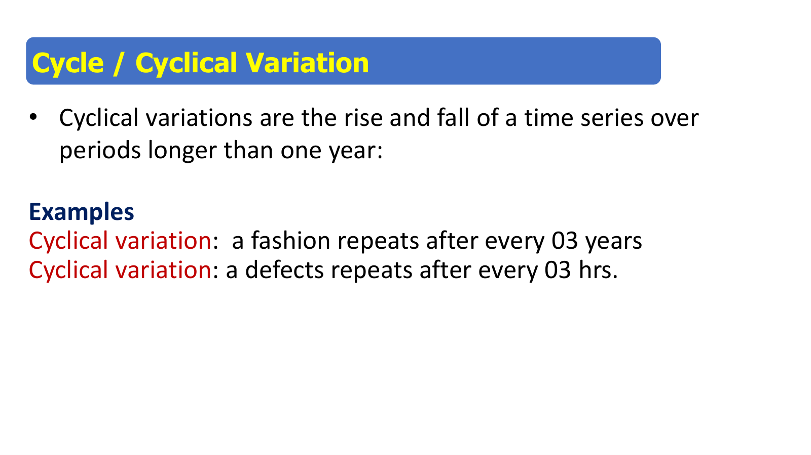
ตัวอย่างบนสไลด์คือแฟชั่นที่วนกลับมาทุก 3 ปี และของเสียที่เกิดซ้ำทุก 3 ชั่วโมง ตัวอย่างหลังรอบสั้นกว่าหนึ่งปี แต่ยังนับเป็น cycle เพราะรอบเกิดตามจังหวะของเครื่องจักร ไม่ผูกกับปฏิทิน
| Seasonal | Cycle | |
|---|---|---|
| ผูกกับปฏิทินไหม | ใช่ เกิดช่วงเดิมทุกปี | ไม่ |
| ความยาวรอบ | คงที่ เช่น 12 เดือน | ไม่คงที่ มักยาวกว่าหนึ่งปี |
| ทำนายตำแหน่งยอดล่วงหน้า | ได้ | ยาก |
| ตัวอย่าง | ไฟฟ้าใช้มากทุกหน้าร้อน | วัฏจักรเศรษฐกิจ รอบละหลายปี |
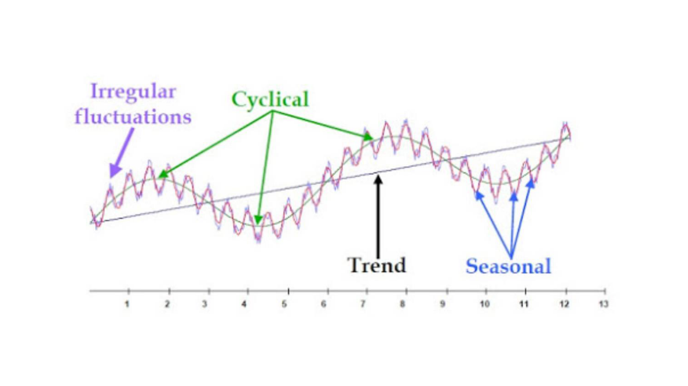
บนแกนเวลา 1 ถึง 13 องค์ประกอบทั้งสี่ซ้อนกัน แยกได้ด้วยความยาวของรอบ
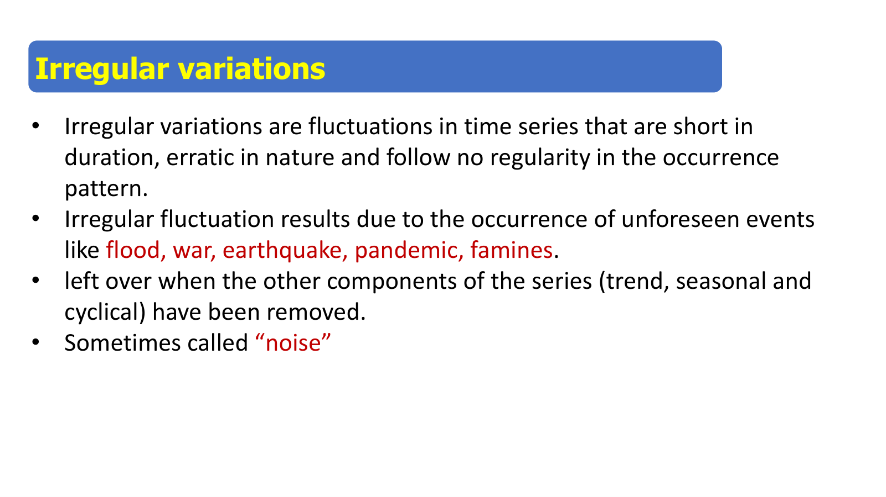
Irregular คือความผันผวนระยะสั้นที่ไม่มีแบบแผน เกิดจากเหตุไม่คาดคิด เช่น flood, war, earthquake, pandemic, famines (น้ำท่วม สงคราม แผ่นดินไหว โรคระบาด ทุพภิกขภัย) สไลด์นิยามว่าเป็นส่วนที่ left over เมื่อนำ trend, seasonal และ cycle ออกแล้ว บางครั้งเรียกว่า “noise”
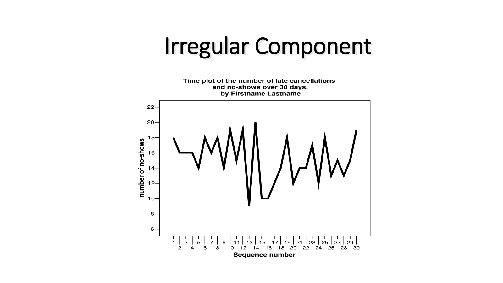
จำนวนผู้ยกเลิกนัดกะทันหันใน 30 วันแกว่งระหว่าง 9 (วันที่ 13) ถึง 20 (วันที่ 14) สองวันติดกันต่างกันถึง 11 ลองใช้สี่ขั้นในหัวข้อ 2
เมื่อหา trend, seasonal และ cycle ไม่เจอ สิ่งที่เห็นคือ irregular ล้วน ๆ
นอกจากสี่องค์ประกอบ อีกเรื่องที่สำคัญมากคือ constant กับ non-constant variance21 การแยก trend มีได้หลายเทคนิค แต่การทำให้การแกว่งคงที่เป็นเงื่อนไขของเกือบทุกโมเดล22
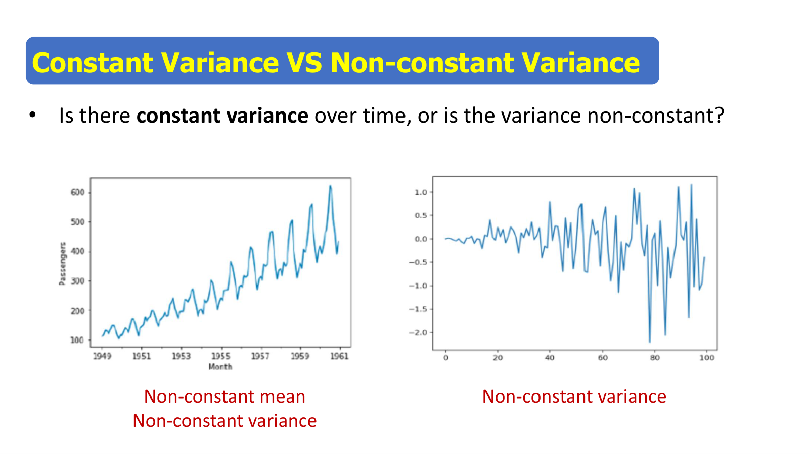
Mean กับ variance เป็นคนละเรื่อง mean คือระดับกลางของเส้น variance คือความกว้างของการแกว่งรอบระดับกลาง กราฟหนึ่งอาจมีปัญหาเรื่องเดียวหรือทั้งสองเรื่อง
| กราฟ | ตัวเลข | สรุป |
|---|---|---|
| ผู้โดยสารสายการบิน 1949–1961 | ระดับเฉลี่ยเพิ่มจากประมาณ 120 เป็น 450 ระยะยอดถึงท้องในแต่ละปีกว้างขึ้นจากประมาณ 40 เป็น 200 | Non-constant mean และ Non-constant variance |
| 100 จุดที่แกว่งรอบ 0 | ช่วงแรกแกว่งแคบประมาณ ±0.1 ช่วงท้ายแกว่งระหว่าง −2 ถึง 1 | mean คงที่ แต่ variance ไม่คงที่ |
ทำไมการแกว่งไม่เท่ากันจึงเป็นปัญหา เทียบกับ regression ได้23
ปีแรกยอดอยู่ระหว่าง 90 ถึง 110 ปีที่สิบยอดอยู่ระหว่าง 360 ถึง 440 ทั้งสองปีแกว่ง ±10% รอบระดับของตัวเอง
ปีแรก \(110-90=20\) ปีที่สิบ \(440-360=80\) ต่างกัน 4 เท่า variance จึงไม่คงที่
ปีแรก \(\ln110-\ln90=4.7005-4.4998=0.2007\) ปีที่สิบ \(\ln440-\ln360=6.0868-5.8861=0.2007\) เท่ากันพอดี
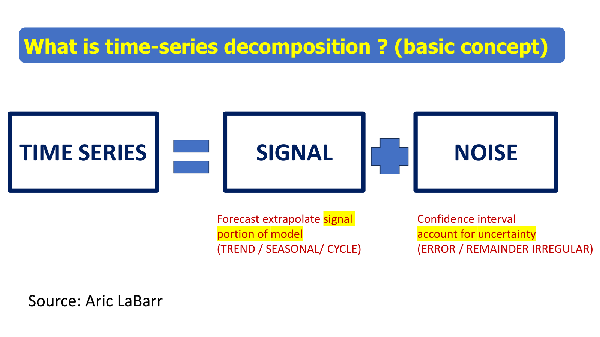
Decomposition มองอนุกรมเวลาเป็น signal บวก noise แต่ละส่วนมีหน้าที่ต่างกัน
| ส่วน | ประกอบด้วย | ใช้ทำอะไร |
|---|---|---|
| Signal | trend, seasonal, cycle | พยากรณ์ โดยยืดส่วนที่มีแบบแผนออกไปในอนาคต: Forecast extrapolate signal portion of model |
| Noise | error, remainder, irregular | พยากรณ์ไม่ได้ แต่ขนาดบอกว่าค่าจริงคลาดจากค่าพยากรณ์ได้แค่ไหน จึงใช้สร้างช่วงความเชื่อมั่น: Confidence interval account for uncertainty |
ไม่มีโมเดลไหนถูกต้องสมบูรณ์ ส่วน noise จึงมีอยู่เสมอ25
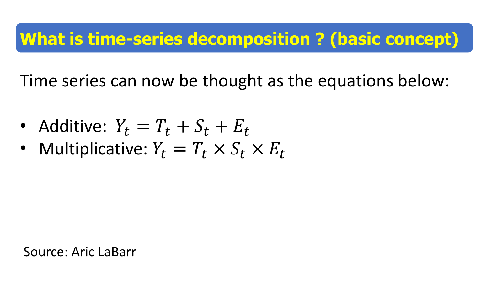
ให้ \(T_t\) คือ trend, \(S_t\) คือ seasonal และ \(E_t\) คือ error เขียน decomposition ได้สองแบบ
แบบคูณ "เปลี่ยนแปลงได้เร็วกว่า" ถ้าอนุกรมไม่ค่อยแกว่งมากขึ้นตามเวลา แบบบวกเหมาะกว่า26
trend ปีแรกอยู่ที่ 100 ปีที่สิบอยู่ที่ 400 หน้าร้อนทำให้ยอดสูงกว่าปกติ
ปีแรก \(100+20=120\) ปีที่สิบ \(400+20=420\) หน้าร้อนเพิ่มยอด 20 หน่วยเท่ากันทุกปี
ปีแรก \(100\times1.2=120\) ปีที่สิบ \(400\times1.2=480\) หน้าร้อนเพิ่มยอด 20 หน่วยในปีแรก แต่ 80 หน่วยในปีที่สิบ
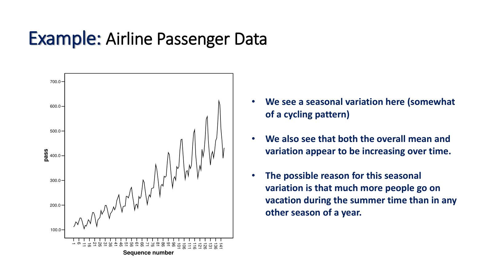
ข้อมูลผู้โดยสารสายการบิน 144 เดือน (ม.ค. 1949 ถึง ธ.ค. 1960) เป็นข้อมูลคลาสสิกในตำรา เพราะมีครบทั้ง trend, seasonal และ variance ที่เพิ่มขึ้น27 สไลด์สรุปสามข้อ
ตัวเลขจริง: ค่าต่ำสุดทั้งชุดคือ 104 สูงสุดคือ 622 ความกว้างจากเดือนต่ำสุดถึงสูงสุดในปีแรกเท่ากับ 44 ในปีสุดท้ายเท่ากับ 232 ยอดประจำฤดูกว้างขึ้นตามระดับ จึงเหมาะกับแบบคูณ
d <- decompose(AirPassengers, type = "multiplicative")
round(d$figure, 3)
plot(d)[1] 0.910 0.884 1.007 0.976 0.981 1.113 1.227 1.220 1.060 0.922 0.801 0.899
ข้อมูล AirPassengers มีใน R อยู่แล้ว d$figure คือ seasonal index ของเดือนมกราคมถึงธันวาคม อ่านแบบคูณ
ถ้าใช้แบบบวก (decompose(AirPassengers)) กรกฎาคมได้ +63.83 คนต่อเดือน ซึ่งเป็นค่าเฉลี่ยของทุกปี ปีแรกจึงเกินจริงและปีท้ายต่ำกว่าจริง วิธีคำนวณ seasonal index ทีละขั้นอยู่ใน Lesson 4
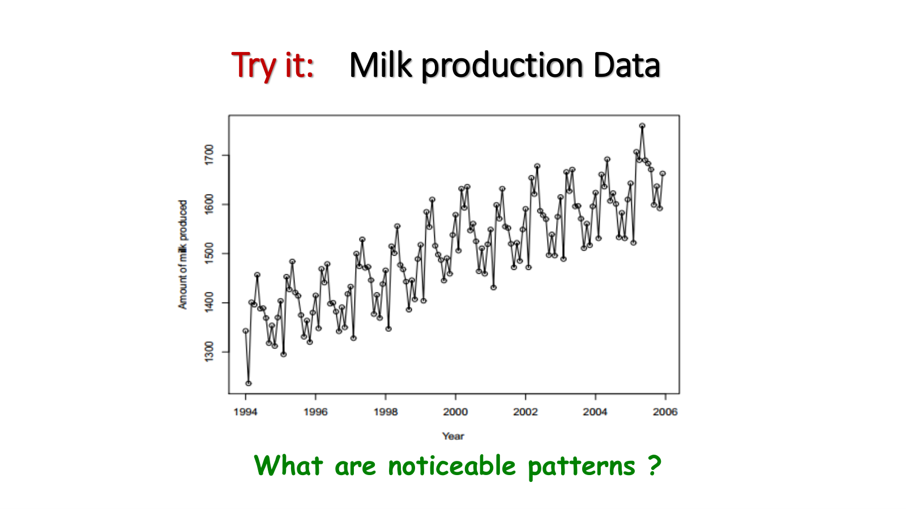
คำถามบนสไลด์: What are noticeable patterns ? ใช้สี่ขั้นในหัวข้อ 2
ข้อมูลนี้ใช้อีกครั้งในบท SARIMA
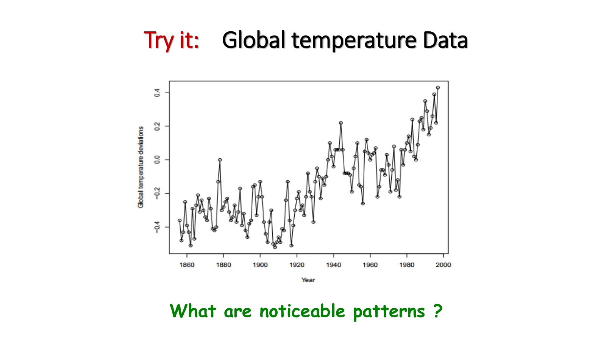
คำถามเดิม What are noticeable patterns ? กับอุณหภูมิโลกรายปี 1856–1997
| ช่วง | ค่า |
|---|---|
| 1856–1920 | ประมาณ −0.5 ถึง −0.2 แทบไม่เพิ่ม |
| 1920–1940 | ขึ้นมาใกล้ 0 |
| 1940–1975 | ค่อนข้างราบ |
| หลัง 1975 | ขึ้นถึงราว 0.4 |
จึงมี trend ขาขึ้นที่ไม่เป็นเส้นตรง และไม่มี seasonal เพราะข้อมูลเป็นรายปี seasonal ต้องวัดหลายครั้งภายในปี ข้อมูลนี้คือไฟล์ temp.txt ที่ใช้ใน Lesson 2, 3 และ 8
ครึ่งหลังของบทเปลี่ยนจากการดูกราฟเป็นการเขียนด้วยคณิตศาสตร์ ช่วงแรกของวิชาเป็นการปูพื้นที่ต้องใช้ความรู้สถิติ28 เหตุผลคือแต่ละจุดของอนุกรมเวลาเป็นตัวแปรสุ่ม จึงมีความสัมพันธ์ระหว่างจุด29 และเครื่องมือวัดความสัมพันธ์นั้นคือ covariance หัวข้อนี้จึงทบทวน covariance ให้คล่องก่อน
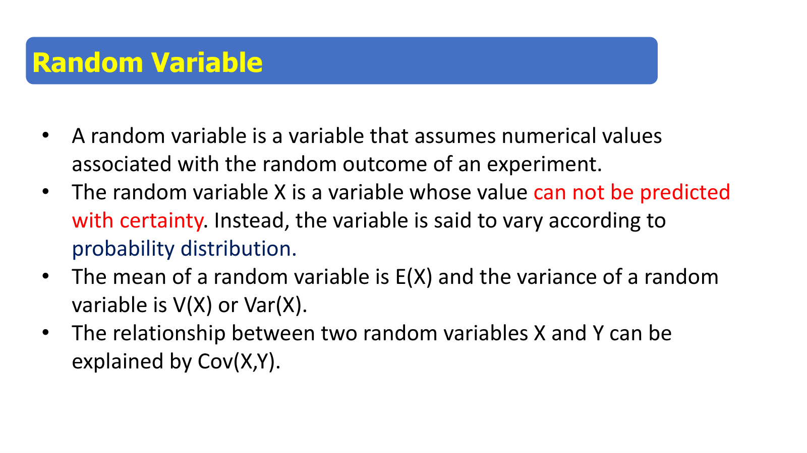
ตัวแปรสุ่มคือตัวแปรที่รับค่าเป็นตัวเลขตามผลของการทดลองสุ่ม ค่าของมัน can not be predicted with certainty แต่แปรผันตาม probability distribution. เช่น แต้มลูกเต๋า ไม่รู้ว่าครั้งหน้าได้แต้มอะไร แต่รู้ว่าแต่ละแต้มมีโอกาส 1 ใน 6
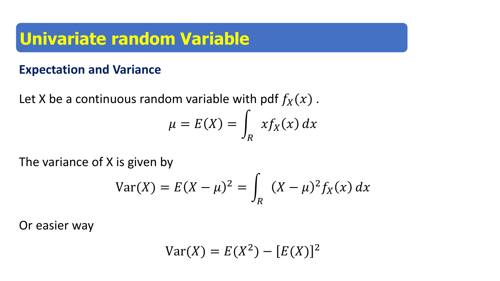
หน้านี้คือ Expectation and Variance ของตัวแปรสุ่มต่อเนื่อง
อินทิกรัลต้องรู้ \(f(x)\) ซึ่งในชีวิตจริงไม่รู้ จึงประมาณจากข้อมูลด้วยค่าเฉลี่ยตัวอย่าง \(\bar x=\sum x_i/n\) และความแปรปรวนตัวอย่าง \(s^2=\sum(x_i-\bar x)^2/(n-1)\) หลักสัญลักษณ์ที่ใช้ตลอดวิชาคือตัวกรีกแทน parameter ตัวอังกฤษแทน statistic32 เช่น \(\rho(h)\) คือค่าจริงที่ไม่รู้ \(\hat\rho(h)\) คือค่าที่ประมาณจากข้อมูล
\(E(X)=(1+2+3+4+5+6)/6=21/6=3.5\)
\((1+4+9+16+25+36)/6=91/6=15.167\)
\(\mathrm{Var}(X)=15.167-3.5^2=15.167-12.25=2.917\)
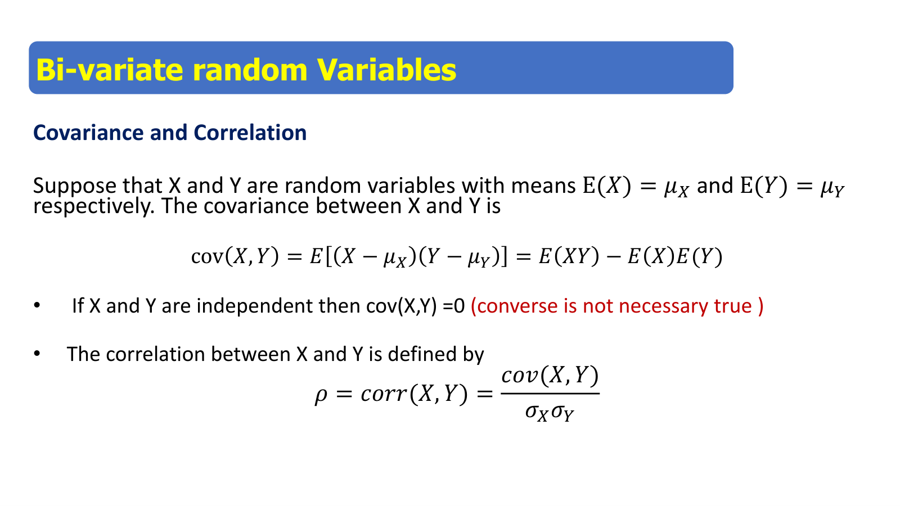
หน้านี้คือ Covariance and Correlation ของตัวแปรสองตัว
| Covariance | Correlation | |
|---|---|---|
| นิยาม | \(\mathrm{cov}(X,Y)=E[(X-\mu_X)(Y-\mu_Y)]=E(XY)-E(X)E(Y)\) | \(\rho=\mathrm{cov}(X,Y)/(\sigma_X\sigma_Y)\) คือ "standardized version ของ covariance" |
| บอกอะไร | ทิศทางเท่านั้น บวกคือไปทางเดียวกัน (X มาก Y ก็มากเป็นส่วนใหญ่) ลบคือสวนทาง | ทั้งทิศทางและความแรง |
| ช่วงค่า | ลบอนันต์ถึงบวกอนันต์ ขนาดขึ้นกับหน่วย | −1 ถึง 1 ไม่มีหน่วย |
ถ้า X กับ Y อิสระต่อกัน แล้ว \(\mathrm{cov}(X,Y)=0\)36 เพราะเมื่ออิสระต่อกัน \(E(XY)=E(X)E(Y)\) แทนในสูตรได้ \(\mathrm{cov}=E(XY)-E(X)E(Y)=0\)
ส่วนกลับไม่จริงเสมอ (converse is not necessary true ) ตัวอย่างค้าน: X มีค่า −1, 0, 1 ด้วยโอกาสเท่ากัน และ \(Y=X^2\) ได้ \(E(X)=0\) และ \(E(XY)=E(X^3)=(-1+0+1)/3=0\) covariance เป็น 0 ทั้งที่ Y ถูกกำหนดจาก X ทั้งหมด เพราะ covariance วัดเฉพาะความสัมพันธ์เชิงเส้น ความสัมพันธ์แบบโค้งตัวยูจึงหลุดไป
กฎที่ใช้คำนวณตลอดวิชามีหกข้อ ให้ a, b เป็นค่าคงที่ หลักคือดึงสัมประสิทธิ์ออก แล้วคูณกระจายทีละคู่โดยเอาเครื่องหมายไปด้วย37
| ข้อ | กฎ | จำว่า |
|---|---|---|
| 1 | \(E(aX+bY)=aE(X)+bE(Y)\) | ดึงค่าคงที่ออก แยกผลบวกได้ |
| 2 | \(\mathrm{Var}(aX)=a^2\mathrm{Var}(X)\) | ค่าคงที่ออกมาต้องยกกำลังสอง |
| 3 | \(\mathrm{Var}(X+Y)=\mathrm{Var}(X)+\mathrm{Var}(Y)+2\mathrm{Cov}(X,Y)\) | ถ้าไม่สัมพันธ์กัน พจน์สุดท้ายเป็นศูนย์ |
| 4 | \(\mathrm{Cov}(X,a)=0\) | ค่าคงที่ไม่แกว่ง จึงไม่แปรร่วมกับอะไร |
| 5 | \(\mathrm{Cov}(aX,bY)=ab\,\mathrm{Cov}(X,Y)\) | ดึงสัมประสิทธิ์ออกทั้งสองข้าง |
| 6 | \(\mathrm{Cov}(X,X)=\mathrm{Var}(X)\) | covariance กับตัวเองคือความแปรปรวน |
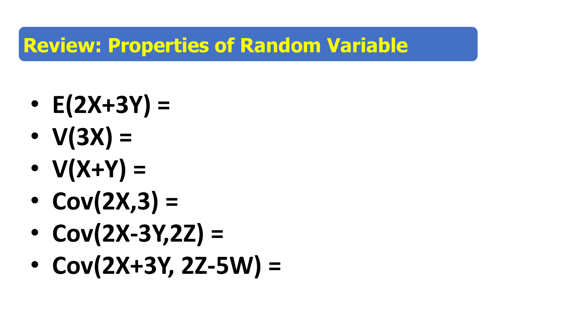
สไลด์ให้โจทย์หกข้อโดยเว้นคำตอบไว้ ทุกข้อใช้กฎในตาราง ข้อสุดท้ายในกล่องเป็นตัวอย่างเพิ่มเติมที่ทำบนกระดาน
กฎข้อ 1: \(2E(X)+3E(Y)\)
กฎข้อ 2: \(3^2V(X)=9V(X)\) ไม่ใช่ \(3V(X)\)
กฎข้อ 3: \(V(X)+V(Y)+2\mathrm{Cov}(X,Y)\) ถ้าอิสระต่อกันเหลือ \(V(X)+V(Y)\)
3 เป็นค่าคงที่ กฎข้อ 4: \(=0\)
กระจายทีละคู่: \(\mathrm{Cov}(2X,2Z)+\mathrm{Cov}(-3Y,2Z)=4\mathrm{Cov}(X,Z)-6\mathrm{Cov}(Y,Z)\)
สองตัวคูณสองตัวได้ 4 คู่: \(4\mathrm{Cov}(X,Z)-10\mathrm{Cov}(X,W)+6\mathrm{Cov}(Y,Z)-15\mathrm{Cov}(Y,W)\)
\(\mathrm{Cov}(2X,Z)+\mathrm{Cov}(2X,2W)-\mathrm{Cov}(Y,Z)-\mathrm{Cov}(Y,2W)=2\sigma_{XZ}+4\sigma_{XW}-\sigma_{YZ}-2\sigma_{YW}\)38
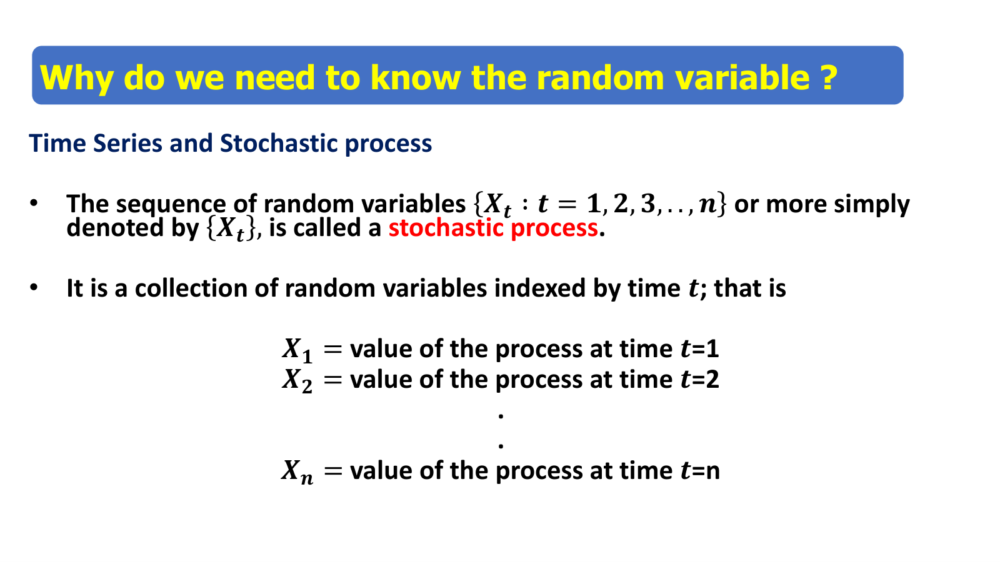
ลำดับของตัวแปรสุ่ม \(\{X_t:t=1,2,\dots,n\}\) เรียกว่า stochastic process คือกลุ่มของตัวแปรสุ่มที่มีเวลาเป็นดัชนี \(X_1\) คือค่าที่เวลา 1, \(X_2\) คือค่าที่เวลา 2 จุดที่ต่างจากสถิติทั่วไป39
เทียบได้กับทอยลูกเต๋า n ลูกเรียงกัน ลูกละหนึ่งเวลา แต่ละลูกอาจถ่วงน้ำหนักไม่เหมือนกัน ข้อมูลที่เห็นคือแต้มที่ออกหนึ่งชุด ถ้าย้อนเวลาไปทอยใหม่จะได้อีกชุด แต่เวลาย้อนไม่ได้ ข้อมูลจึงมีชุดเดียว ความยากของวิชาคือต้องเรียนรู้ลักษณะของลูกเต๋าทั้ง n ลูกจากการทอยเพียงครั้งเดียว
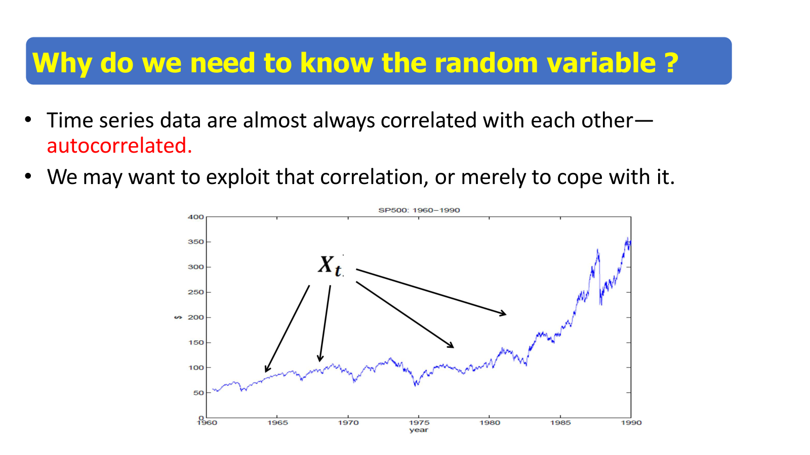
ข้อมูลอนุกรมเวลาสัมพันธ์กันเองเกือบทุกครั้ง เรียกว่า autocorrelated. เช่น ใน S&P 500 ค่าปี 1983 ใกล้ค่าปี 1982 มากกว่าค่าปี 1965 ทางเลือกมีสองทาง
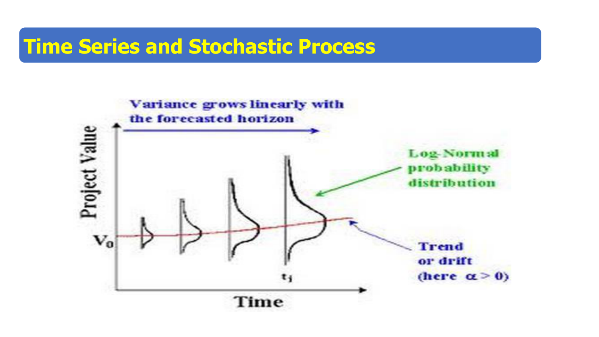
จุดเริ่มต้น \(V_0\) เป็นค่าที่รู้แน่นอน แต่ละเวลาถัดไป ค่าที่เป็นไปได้กระจายเป็นการแจกแจงหนึ่งก้อน ศูนย์กลางเลื่อนขึ้นตาม trend และ variance grows linearly with the forecasted horizon ยิ่งมองไกล ก้อนยิ่งกว้าง ความไม่แน่นอนยิ่งมาก นี่คือเหตุผลเชิงทฤษฎีที่ธุรกิจชอบพยากรณ์ระยะสั้น และเป็นสิ่งเดียวกับที่จะพิสูจน์ในหัวข้อ 11: random walk มีความแปรปรวน \(t\sigma_w^2\) ซึ่งโตเป็นเส้นตรงตามเวลา
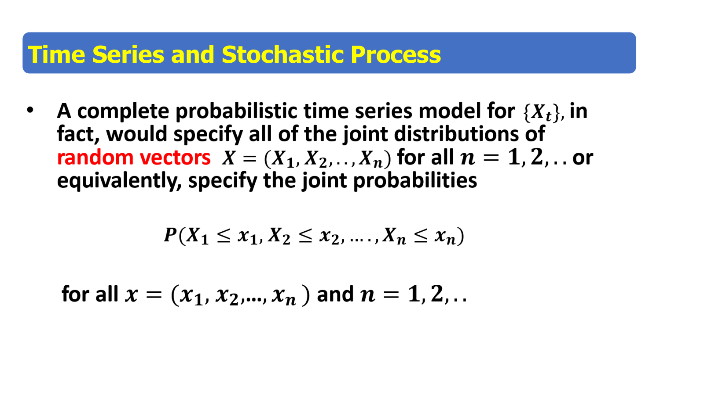
การอธิบายอนุกรมเวลาให้ครบสมบูรณ์ต้องรู้การแจกแจงร่วมของ \((X_1,\dots,X_n)\) ทุกชุด คือรู้ \(P(X_1\le x_1,\dots,X_n\le x_n)\) ทุกค่า x และทุก n หมายถึงรู้โอกาสของทุกเส้นทางที่ข้อมูลเป็นไปได้ ซึ่งมากเกินกว่าจะหาได้จากข้อมูลชุดเดียว
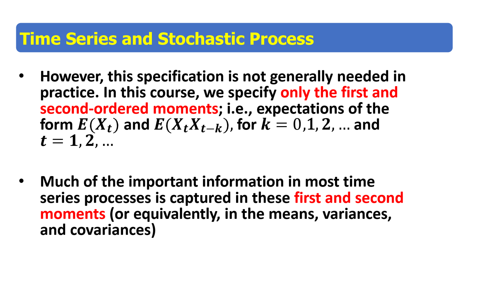
ทางออกคือระบุเฉพาะ only the first and second-ordered moments คือ \(E(X_t)\) และ \(E(X_tX_{t-k})\) เพราะข้อมูลสำคัญส่วนใหญ่ของอนุกรมเวลาอยู่ใน first and second moments
เปรียบเหมือนบรรยายคนด้วยส่วนสูงกับน้ำหนัก ไม่ครบทุกรายละเอียด แต่พอแยกคนส่วนใหญ่ออกจากกันได้
สามนิยามในหัวข้อนี้คือ moment อันดับหนึ่งและสองที่เขียนเป็นฟังก์ชันของเวลา คำว่า auto หมายถึงในตัวเอง covariance ระหว่าง X กับ Y ใช้กับ cross-sectional คือความสัมพันธ์ระหว่างตัวแปร แต่อนุกรมเวลามีตัวแปรเดียว จึงวัดความสัมพันธ์ระหว่างจุดเวลา autocovariance จึงแปลว่า "ความแปรปรวนร่วมในตัวมันเอง"40
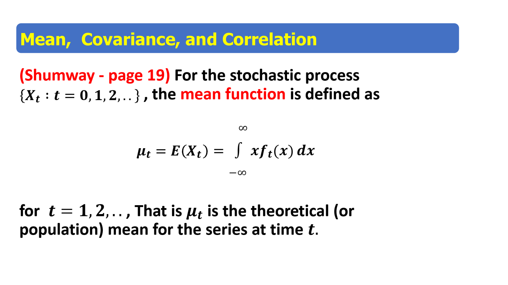
Mean function คือ \(\mu_t=E(X_t)\) ค่าเฉลี่ยทางทฤษฎีที่เวลา t มีตัวห้อย t เพราะแต่ละเวลาอาจมีค่าเฉลี่ยไม่เท่ากัน ข้อมูลที่มี trend ขาขึ้นมี \(\mu_t\) เพิ่มตามเวลา ข้อมูลที่แกว่งรอบระดับเดิมมี \(\mu_t\) คงที่ ความต่างนี้คือเกณฑ์ข้อแรกของ stationarity ใน Lesson 2
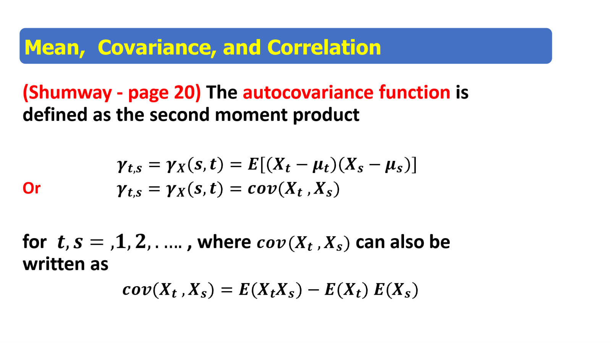
Autocovariance function คือ \(\gamma(s,t)=\mathrm{cov}(X_s,X_t)=E[(X_s-\mu_s)(X_t-\mu_t)]=E(X_sX_t)-\mu_s\mu_t\) เขียนเป็น \(\gamma(s,t)\) หรือ \(\gamma_{s,t}\) ก็ได้ เช่น \(\gamma(1,5)\) คือความสัมพันธ์ระหว่างเดือนมกราคมกับพฤษภาคม41
เขียนด้วย lag: แทนที่จะสนใจจุดเวลา t กับ s ทีละจุด ให้สนใจว่าห่างกันแค่ไหน42 จึงเขียนคู่ \(X_t\) กับ \(X_{t+h}\) โดย h คือระยะห่าง เรียกว่า lag h ต่ำสุดคือ 0 ซึ่งหมายถึงจุดเดียวกัน และ \(\gamma(0)=\mathrm{Var}(X_t)\) การเขียนแบบนี้ใช้ได้เต็มที่เมื่อ covariance ขึ้นกับระยะห่างอย่างเดียว ซึ่งคือนิยามของ stationarity ใน Lesson 2
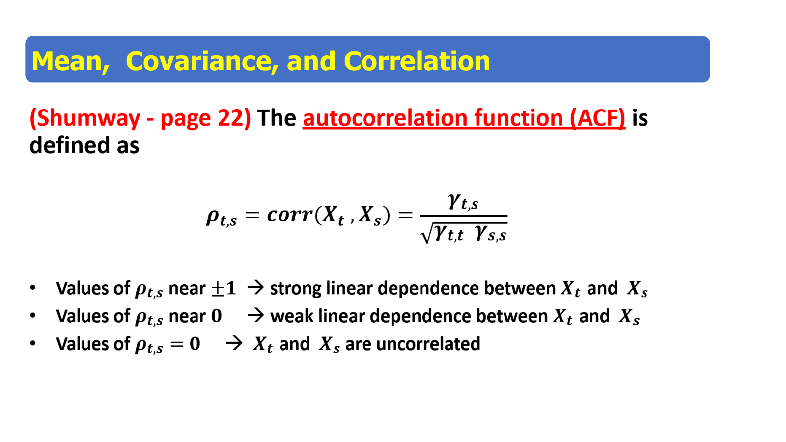
Autocorrelation function คือ \(\rho(s,t)=\dfrac{\gamma(s,t)}{\sqrt{\gamma(s,s)\,\gamma(t,t)}}\) คือ autocovariance หารด้วยส่วนเบี่ยงเบนมาตรฐานของทั้งสองเวลา จึงอยู่ระหว่าง −1 ถึง 1 อ่านค่าได้สามระดับ
เมื่อเขียนด้วย lag และความแปรปรวนเท่ากันทุกเวลา ตัวหารคือ \(\sqrt{\gamma(0)\gamma(0)}=\gamma(0)\) สูตรจึงย่อเป็น
\(\rho(h)=\dfrac{\gamma(h)}{\gamma(0)}\)
ใช้ได้กับทุกอนุกรมเวลา43 ผลที่ตามมาทันทีคือ \(\rho(0)=\gamma(0)/\gamma(0)=1\) เสมอ เพราะเป็นตัวแปรเดียวกัน44 ข้อสอบที่ให้หา ACF จึงเริ่มจากหา \(\gamma(h)\) ทุก lag แล้วหารด้วย \(\gamma(0)\)
\(\mu_t=E(5)+E(w_t)=5+0=5\) เท่ากันทุกเวลา
\(\mathrm{Var}(5+w_t)=\mathrm{Var}(w_t)=4\) การบวกค่าคงที่ไม่เปลี่ยนการแกว่ง
\(\mathrm{cov}(5+w_t,\,5+w_{t+h})=\mathrm{cov}(w_t,w_{t+h})=0\) เพราะอิสระต่อกัน
\(\rho(0)=4/4=1\) และ \(\rho(h)=0/4=0\) เมื่อ \(h\ne0\)
White noise คืออนุกรมเวลาตัวแรกที่ต้องรู้ ลักษณะคือไม่มีแบบแผนอะไรเลย45 ฟังดูไม่น่าสนใจ แต่ทุกโมเดลในวิชาสร้างจากมัน
ชื่อนี้จำได้ง่ายจากหนังสยองขวัญเรื่อง White Noise ที่เสียงซ่าจากวิทยุแกว่งแบบสุ่ม white noise คือ "การแกว่งแบบ random"46
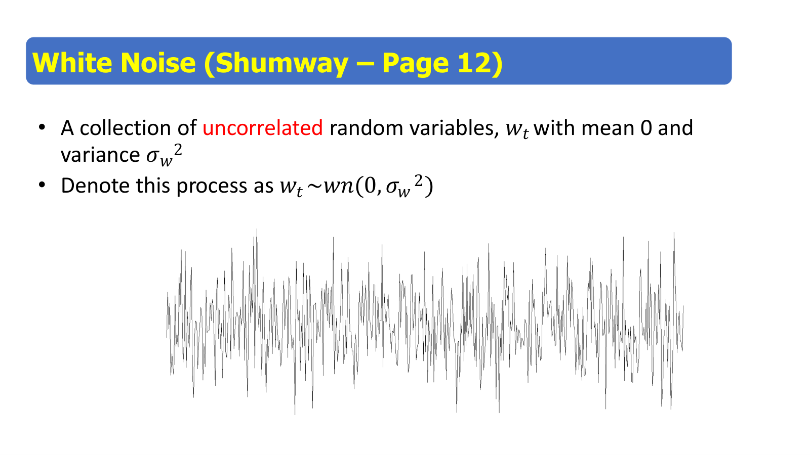
นิยามแรก: white noise คือกลุ่มของตัวแปรสุ่มที่ uncorrelated เขียนว่า \(w_t\) มีค่าเฉลี่ย 0 และความแปรปรวน \(\sigma_w^2\) ย่อว่า \(w_t\sim wn(0,\sigma_w^2)\) ในกราฟ ค่าแกว่งขึ้นลงถี่รอบศูนย์ ความกว้างเท่าเดิมตั้งแต่ต้นจนจบ และไม่มีช่วงที่เกาะกลุ่มสูงหรือต่ำติดกันนาน ค่าก่อนหน้าไม่ได้บอกอะไรเกี่ยวกับค่าถัดไป นี่คือความหมายของ uncorrelated เมื่อมองจากกราฟ
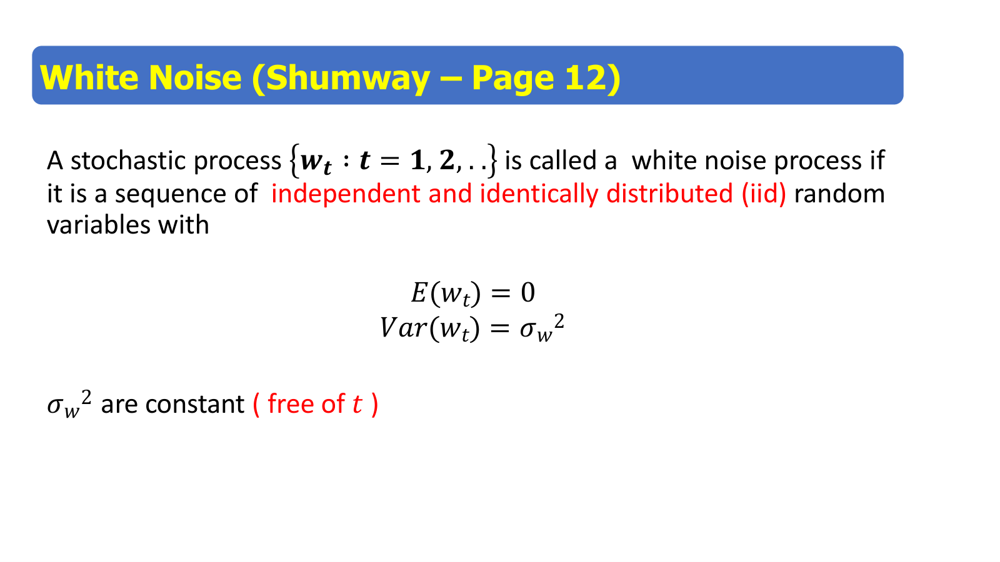
นิยามที่เข้มขึ้น: white noise คือลำดับของตัวแปรสุ่มที่ independent and identically distributed (iid) มี \(E(w_t)=0\), \(\mathrm{Var}(w_t)=\sigma_w^2\) และ \(\sigma_w^2\) เป็นค่าคงที่ ( free of 𝑡 )47
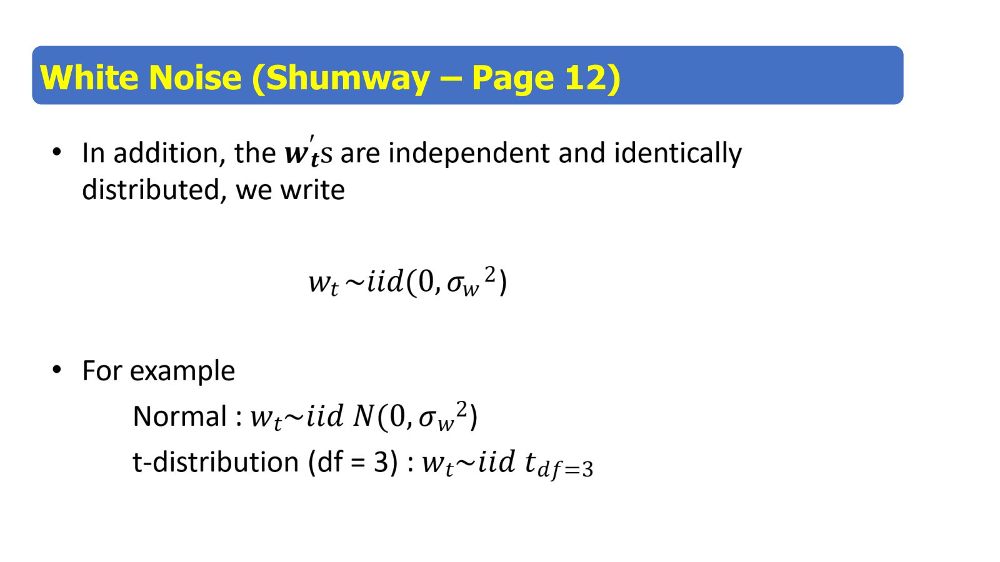
การแจกแจงของ \(w_t\) เป็นแบบใดก็ได้ ตราบที่ค่าเฉลี่ย 0 ความแปรปรวนคงที่ และอิสระต่อกัน สัญกรณ์บอกว่าเลือกการแจกแจงแบบไหน
| การแจกแจง | สัญกรณ์ | หมายเหตุ |
|---|---|---|
| ปกติ (Gaussian white noise) | \(w_t\sim iid\ N(0,\sigma_w^2)\) | ตำราใช้แบบนี้เพราะง่าย48 |
| t ที่องศาอิสระ 3 | \(w_t\sim iid\ t_{df=3}\) | หางหนากว่า มีค่าโดดบ่อยกว่า แต่ยังเป็น white noise เพราะค่าเฉลี่ย 0 ความแปรปรวนคงที่ และอิสระต่อกัน |
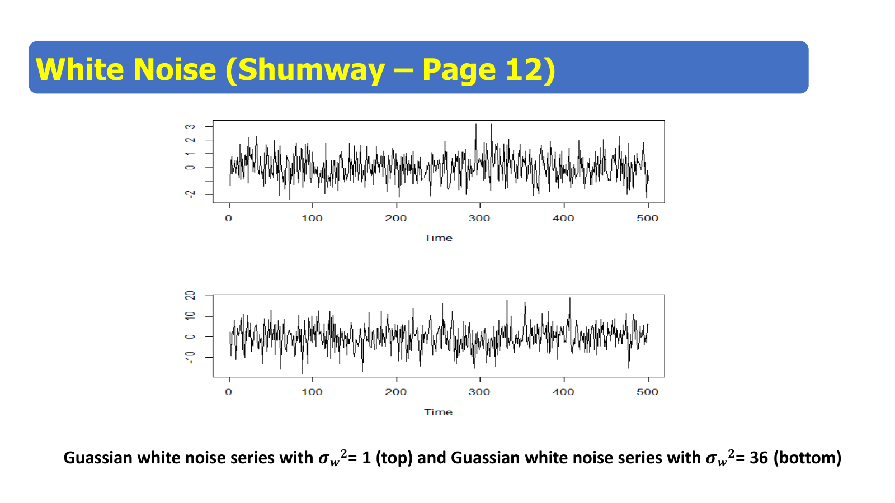
สองชุดนี้รูปแบบเหมือนกัน ต่างกันที่สเกล อ่านด้วยกฎของการแจกแจงปกติ: ภายใน ±1 ส่วนเบี่ยงเบนมาตรฐานมีข้อมูลราว 68% ภายใน ±2 ราว 95% และภายใน ±3 ราว 99.7%49
| ชุด | \(\sigma_w^2\) | ส่วนเบี่ยงเบนมาตรฐาน | ค่าส่วนใหญ่อยู่ระหว่าง |
|---|---|---|---|
| บน | 1 | 1 | −2 ถึง 2 |
| ล่าง | 36 | 6 | −12 ถึง 12 |
ความแปรปรวนเปลี่ยนแค่ความกว้าง ไม่ได้สร้างแบบแผนใหม่
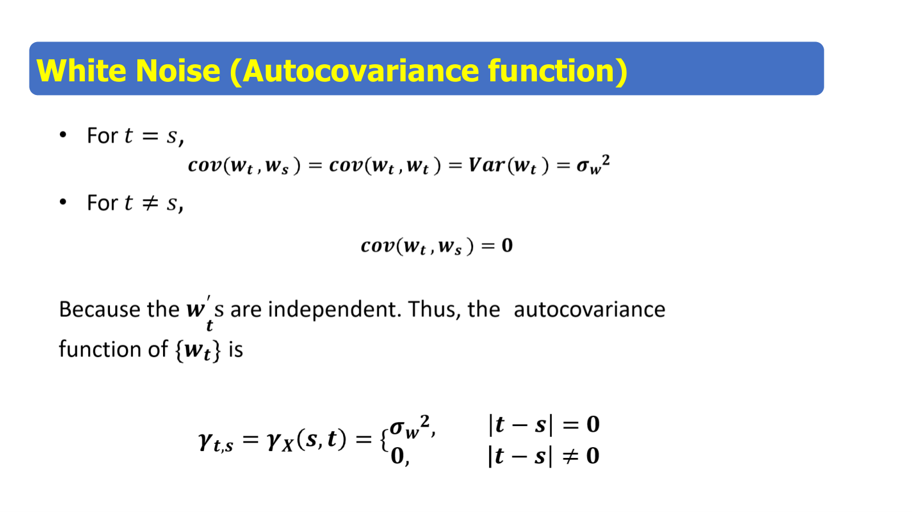
หา autocovariance ของ white noise โดยแยกสองกรณี
สรุปได้ว่า \(\gamma(h)=\sigma_w^2\) เมื่อ h = 0 และ \(\gamma(h)=0\) เมื่อ h ≠ 0
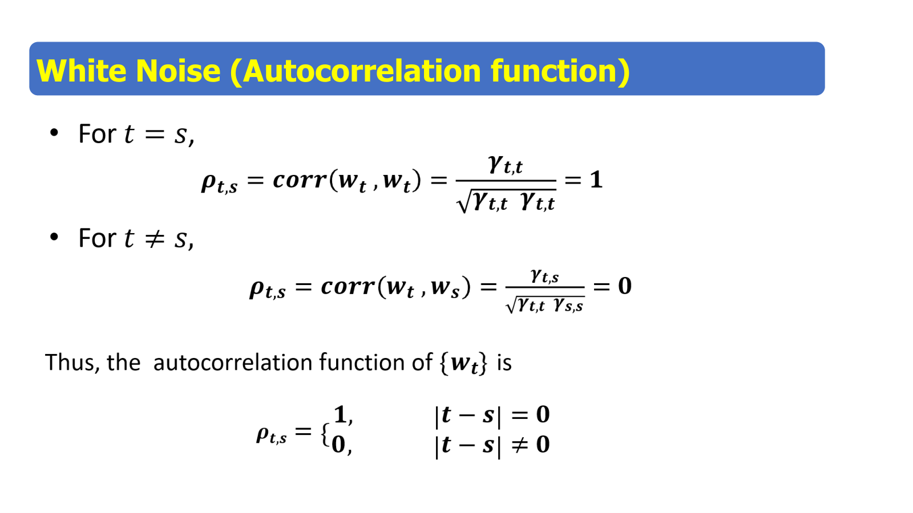
แทนในสูตร \(\rho(h)=\gamma(h)/\gamma(0)\) ได้ \(\rho(0)=\sigma_w^2/\sigma_w^2=1\) และ \(\rho(h)=0/\sigma_w^2=0\) เมื่อ h ≠ 0 white noise สัมพันธ์กับตัวเองเต็มที่ที่เวลาเดียวกัน และไม่สัมพันธ์กับเวลาอื่นเลย ผลนี้ไม่ขึ้นกับ t จึงเป็นตัวอย่างแรกของอนุกรมที่ stationary ใน Lesson 2
\(\mathrm{cov}(w_i,w_j)=\sigma_w^2\) ถ้า \(i=j\) และ \(=0\) ถ้า \(i\ne j\) คู่ที่ต่างเวลากัน covariance เป็นศูนย์เสมอ แม้อยู่ในฟังก์ชันที่ต่างกัน50 ตัว white noise เองจะไม่ออกข้อสอบเพราะง่ายที่สุด51 แต่ทุกข้อสอบใช้กฎนี้
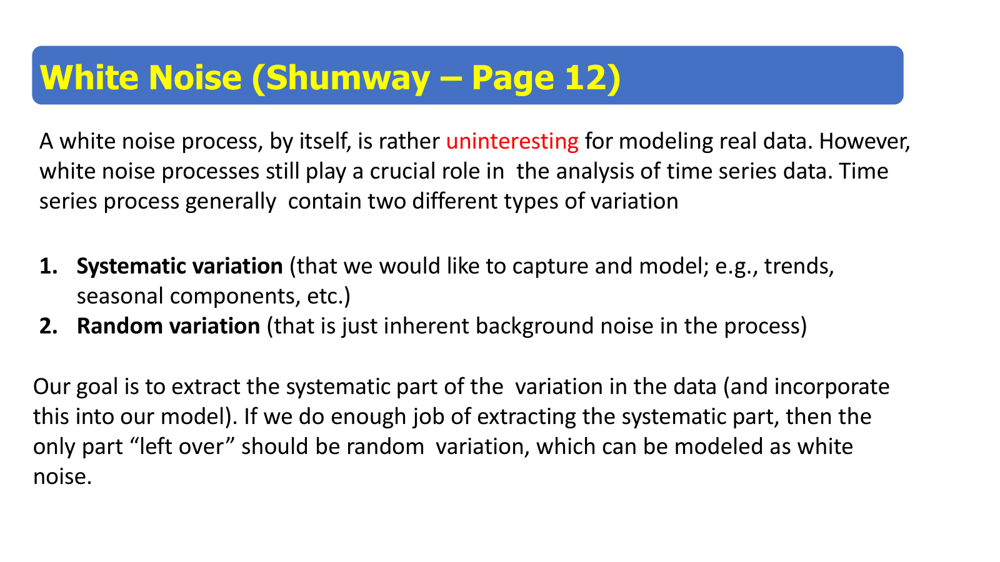
White noise โดยตัวเอง uninteresting สำหรับสร้างโมเดลให้ข้อมูลจริง แต่มีบทบาทสำคัญ อนุกรมเวลามีการแปรผันสองชนิด
เป้าหมายคือดึงส่วนที่เป็นระบบออกให้หมด ถ้าทำได้ดี ส่วนที่เหลือหลังสร้างโมเดลควรเป็น white noise52 นี่คือเกณฑ์ตรวจโมเดลใน Lesson 8: ถ้า residual ยังมีแบบแผน แปลว่าโมเดลยังดึงไม่หมด เหมือนกรองกาแฟแล้วยังมีผงหลุดลงแก้ว แปลว่าที่กรองยังไม่ละเอียดพอ
set.seed(1)
w <- rnorm(100) # 100 ค่าจาก N(0, 1)
plot(ts(w)) # ต้องแปลงเป็น ts ก่อน ไม่งั้น R วาดเป็นจุดแบบ cross-sectional
acf(w, plot = FALSE) # ค่า ACF เป็นตัวเลข
acf(w) # correlogram พร้อมเส้นขอบmean = 0.109 sd = 0.898 อยู่ใน ±1: 74% อยู่ใน ±2: 97% ACF lag 1–5: -0.004 -0.027 -0.107 -0.113 -0.093 (ไม่มี lag ใดเกิน ±0.2 ใน 10 lag แรก)
| โค้ด | ทำอะไร |
|---|---|
| set.seed(1) | ล็อกตัวเลขสุ่มให้ได้ผลเดิมทุกครั้ง ถ้าไม่ใส่ ตัวเลขจะต่างไปแต่ลักษณะเหมือนเดิม |
| rnorm(100) | สุ่ม 100 ค่าจากการแจกแจงปกติ ค่าเฉลี่ย 0 ส่วนเบี่ยงเบนมาตรฐาน 1 |
| ts(w) | บอก R ว่าเป็นอนุกรมเวลา ถ้าไม่บอก R จะถือเป็น cross-sectional53 |
| acf(w) | วาด correlogram เส้นประคือ \(\pm2/\sqrt{n}=\pm0.2\) แท่งที่อยู่ในเส้นถือว่าเป็นศูนย์ |
อ่านผล
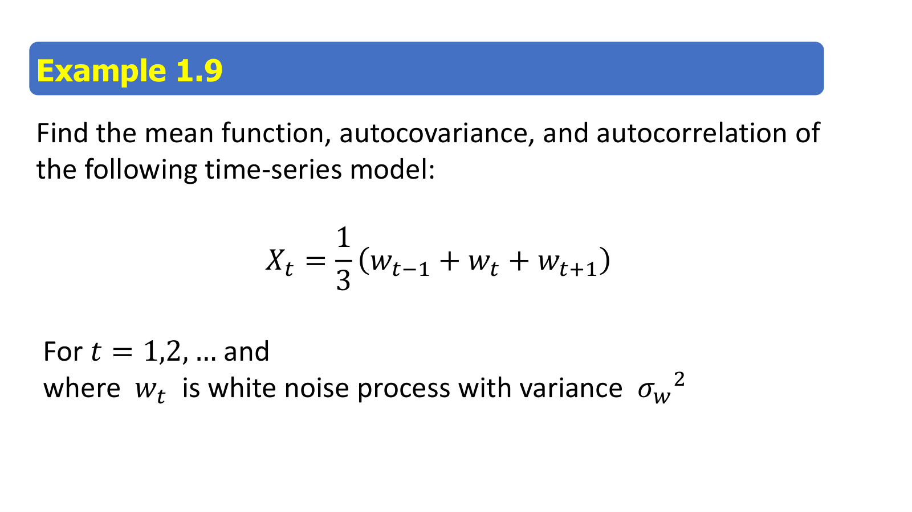
โจทย์: หา mean function, autocovariance และ autocorrelation ของ \(X_t=\tfrac13(w_{t-1}+w_t+w_{t+1})\) โมเดลนี้เฉลี่ย white noise สามค่าที่อยู่ติดกัน เป็นตัวอย่างแรกของการประกอบ white noise เป็นอนุกรมที่มีความสัมพันธ์ระหว่างจุด และเป็นโจทย์แนวที่จะออกสอบ55
คูณกระจาย covariance โดยจับคู่ w ที่ "ชน" กัน คู่ที่ต่างเวลาเป็นศูนย์ ทำเป็นขั้นได้ดังนี้
อย่าเดา pattern เอาเอง ต้องคูณกระจายจริง ใน \(x_t=w_{t-1}+2w_t+w_{t+1}\) เห็น \(\gamma(0)=6\sigma^2\), \(\gamma(1)=4\sigma^2\) แล้วมักเดาว่า \(\gamma(2)=2\sigma^2\) แต่ค่าจริงคือ \(\sigma^2\)56 เฉลยเต็มอยู่ใน Lesson 2
\(E(X_t)=\tfrac13[E(w_{t-1})+E(w_t)+E(w_{t+1})]=\tfrac13(0+0+0)=0\) ทุกเวลา
\(X_t\) ใช้ \(w_{t-1},w_t,w_{t+1}\) และ \(X_{t+h}\) ใช้ \(w_{t+h-1},w_{t+h},w_{t+h+1}\) สัมประสิทธิ์ทุกตัวคือ \(\tfrac13\) ตัวที่ตรงกันแต่ละตัวให้ \(\tfrac13\cdot\tfrac13\sigma_w^2=\tfrac19\sigma_w^2\)
ตรงกันครบสามตัว: \(\gamma(0)=\tfrac39\sigma_w^2=\tfrac13\sigma_w^2\)
ก้อนแรก t−1, t, t+1 ก้อนหลัง t, t+1, t+2 ตรงกันสองตัวคือ t และ t+1: \(\gamma(1)=\tfrac29\sigma_w^2\)
ก้อนหลัง t+1, t+2, t+3 ตรงกันตัวเดียวคือ t+1: \(\gamma(2)=\tfrac19\sigma_w^2\)
ก้อนหลังเริ่มที่ t+2 ไม่มีตัวที่ตรงกัน: \(\gamma(h)=0\) และค่า h ติดลบให้ผลเท่ากับค่าบวก
หารทุกค่าด้วย \(\gamma(0)=\tfrac39\sigma_w^2\): \(\rho(0)=1\), \(\rho(1)=\tfrac{2/9}{3/9}=\tfrac23\), \(\rho(2)=\tfrac13\), \(\rho(h)=0\) เมื่อ \(|h|\ge3\)
ตีความ
| ระยะห่าง | w ที่ใช้ร่วมกัน | correlation |
|---|---|---|
| 1 ช่วง | 2 ใน 3 ตัว | 2/3 |
| 2 ช่วง | 1 ตัว | 1/3 |
| 3 ช่วงขึ้นไป | ไม่มี | 0 |
เปรียบได้กับคนยืนต่อแถว แต่ละคนจับมือกับเพื่อนสามคนรอบตัว คนที่ยืนติดกันจับมือคนเดียวกันสองคน คนที่ห่างกันสามตำแหน่งไม่มีมือที่จับร่วมกันเลย ผลทั้งหมดไม่ขึ้นกับ t จึงเป็น stationary และ ACF ที่ตัดเป็นศูนย์หลัง lag 2 เป็นลักษณะของโมเดลตระกูล moving average ใน Lesson 5
set.seed(2)
w <- rnorm(1002)
x <- stats::filter(w, rep(1/3, 3)) # เฉลี่ยสามค่าติดกัน (ค่าก่อน ค่าปัจจุบัน ค่าถัดไป)
x <- na.omit(x) # ตัดค่าหัวท้ายที่หาไม่ได้
acf(x, lag.max = 4, plot = FALSE)
var(x)ACF lag 1–4: 0.683 0.383 0.030 0.001 ทฤษฎี: 0.667 0.333 0 0 var(x) = 0.362 ทฤษฎี: 1/3 = 0.333
stats::filter(w, rep(1/3, 3)) คูณสามค่าที่อยู่ติดกันด้วย 1/3 แล้วรวม ค่าเริ่มต้นของ filter จัดให้ค่าปัจจุบันอยู่ตรงกลาง จึงตรงกับ \(w_{t-1},w_t,w_{t+1}\) ค่าจากข้อมูล 1,000 จุดใกล้ทฤษฎีทุก lag ส่วนต่างที่เหลือมาจากการสุ่ม ถ้าเพิ่มจำนวนจุด ส่วนต่างจะเล็กลง
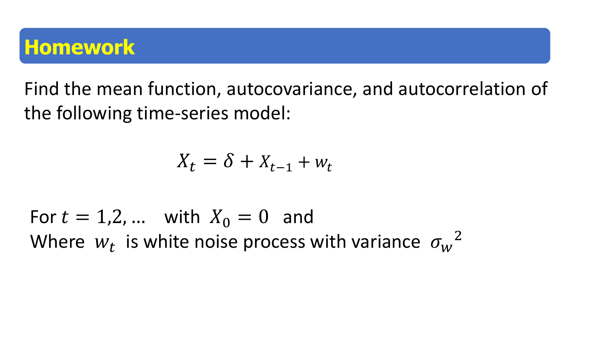
โจทย์: หา mean function, autocovariance และ autocorrelation ของ \(X_t=\delta+X_{t-1}+w_t\) โดย \(X_0=0\) โมเดลนี้เรียกว่า random walk with drift ค่าวันนี้เท่ากับค่าเมื่อวาน บวกค่าคงที่ \(\delta\) (drift) บวกแรงกระแทกสุ่ม เทียบได้กับคนเมาที่เดินไปข้างหน้าก้าวละ \(\delta\) แต่เซซ้ายขวาแบบสุ่มทุกก้าว ตำแหน่งปัจจุบันคือผลรวมของทุกก้าว การเซแต่ละครั้งจึงสะสมไปตลอด ข้อนี้คือ Shumway problem 1.8 หน้า 41 ซึ่งต้องใช้ทริกเล็กน้อย57
\(X_1=\delta+X_0+w_1=\delta+w_1\)
\(X_2=\delta+X_1+w_2=2\delta+w_1+w_2\)
\(X_3=\delta+X_2+w_3=3\delta+w_1+w_2+w_3\)
\(X_t=t\delta+\sum_{k=1}^{t}w_k\) ต้องแตกเป็นรูปนี้ก่อนจึงทำต่อได้60
\(E(X_t)=t\delta+\sum E(w_k)=t\delta\) ขึ้นกับ t ซึ่งเป็นลักษณะของ random walk เกือบทุกตัว จึงไม่ stationary61
\(\gamma(s,t)=\mathrm{cov}\big(s\delta+\sum_{k=1}^{s}w_k,\ t\delta+\sum_{k=1}^{t}w_k\big)=\mathrm{cov}\big(\sum_{k=1}^{s}w_k,\ \sum_{k=1}^{t}w_k\big)\) เพราะ \(s\delta\) และ \(t\delta\) ไม่ใช่ตัวแปรสุ่ม เป็นแค่ time indicator62
s = 2, t = 3: \(\mathrm{cov}(w_1+w_2,\ w_1+w_2+w_3)\) ตัวที่ตรงกันคือ \(w_1,w_2\) ได้ \(2\sigma_w^2\)
s = 3, t = 3: ตรงกันสามตัว ได้ \(3\sigma_w^2\) s = 2, t = 1: ตรงกันตัวเดียว ได้ \(\sigma_w^2\)
จำนวนตัวที่ตรงกันคือเวลาที่น้อยกว่า ปีกกาหลายกรณีจึงเขียนเป็นฟังก์ชันเดียวด้วย min: \(\gamma(s,t)=\min\{s,t\}\,\sigma_w^2\)63
\(\rho(s,t)=\dfrac{\min\{s,t\}\sigma_w^2}{\sqrt{s\sigma_w^2}\sqrt{t\sigma_w^2}}=\dfrac{\min\{s,t\}\sigma_w^2}{\sigma_w^2\sqrt{st}}=\dfrac{\min\{s,t\}}{\sqrt{st}}\)
ตัวอย่างตัวเลข
ยิ่งเวลาผ่านไปนาน ค่าที่อยู่ติดกันยิ่งสัมพันธ์กันสูง เพราะทั้งสองมีแรงกระแทกสะสมชุดเดียวกันเกือบทั้งหมด ความแปรปรวน \(t\sigma_w^2\) ที่โตเป็นเส้นตรงคือสิ่งที่สไลด์หน้า 32 วาดเป็นก้อนการแจกแจงที่กว้างขึ้นเรื่อย ๆ
ทำไมต้องหาสูตรเหล่านี้: ในทางปฏิบัติไม่รู้ว่าข้อมูลมาจากโมเดลอะไร ถ้าเจอข้อมูลที่ autocorrelation คล้ายกับสูตรของโมเดลใด ก็ตรวจได้ว่าน่าจะเป็นโมเดลนั้นหรือไม่66
set.seed(4)
R <- replicate(5000, cumsum(0.2 + rnorm(50))) # random walk, drift 0.2, sigma = 1, 50 จุด ทำ 5000 รอบ
mean(R[50, ]); var(R[10, ]); var(R[50, ])
cor(R[10, ], R[20, ]) # rho(10, 20)mean t=50 = 9.95 ทฤษฎี tδ = 50(0.2) = 10 var t=10 = 9.91 ทฤษฎี tσ² = 10 var t=50 = 49.99 ทฤษฎี 50 cor(10,20) = 0.699 ทฤษฎี min(10,20)/sqrt(10·20) = 0.707
cumsum(0.2 + rnorm(50)) สร้าง random walk ตามรูปทั่วไปในขั้นที่ 2 คือผลรวมสะสมของ δ + w ส่วน replicate ทำซ้ำ 5,000 ครั้ง แต่ละคอลัมน์คือหนึ่งเส้นทาง แถวที่ 10 จึงเป็นค่า \(X_{10}\) จาก 5,000 เส้นทาง ทุกค่าใกล้ทฤษฎี การจำลองแบบนี้คือเหตุผลที่ต้องเรียน simulation: ใช้ศึกษาว่าแต่ละโมเดลมีหน้าตาอย่างไร67
| Example 1.9 | Homework | |
|---|---|---|
| โมเดล | \(X_t=\tfrac13(w_{t-1}+w_t+w_{t+1})\) | \(X_t=\delta+X_{t-1}+w_t\) |
| Mean | 0 คงที่ | \(t\delta\) ขึ้นกับ t |
| Variance | \(\tfrac13\sigma_w^2\) คงที่ | \(t\sigma_w^2\) โตตาม t |
| Autocovariance | ขึ้นกับระยะห่าง h เท่านั้น | ขึ้นกับเวลา t |
| ผลของแรงกระแทกหนึ่งครั้ง | อยู่สามช่วงเวลาแล้วหมด | สะสมถาวร |
| Stationary | ใช่ | ไม่ |
สองโจทย์ใช้เทคนิคเดียวกันแต่ให้ผลตรงข้าม จึงเป็นคู่เปรียบเทียบที่ดีของเรื่อง stationarity ใน Lesson 2 วิธีทำให้ random walk นิ่งคือการทำผลต่าง \(X_t-X_{t-1}=\delta+w_t\) ซึ่งเหลือแค่ค่าคงที่บวก white noise สอนใน Lesson 3
ทักษะของบทนี้คือหา mean function และ autocovariance ของ process ที่โจทย์สร้างขึ้น ข้อสอบไม่ได้ถามตรง ๆ ว่า "mean คืออะไร" แต่ทุกข้อที่ถามว่า "นิ่งหรือไม่" (Lesson 2) ต้องเริ่มจากทักษะนี้ ข้อสอบปลายภาคเปิดตำราได้และใช้ R กับ Excel ได้ แต่ข้อพิสูจน์ต้องเขียนในกระดาษ เวลาสอบ 3 ชั่วโมงต่อ 40 คะแนน หรือประมาณ 4.5 นาทีต่อคะแนน
| ข้อสอบ | โจทย์ (สรุปความ) | คะแนน | เวลาที่ควรใช้ | เฉลย |
|---|---|---|---|---|
| Practice Final 1 ข้อ 5 | \(X_t=w_t(w_{t-1}+w_t)/2\) หา mean และ autocovariance | 10 | ~15 นาที | ข้อ ก |
| Final 2023 ข้อ 3 | \(Y_t=(-1)^tX\) โดย X มี mean 0 นิ่งหรือไม่ หา mean และ autocovariance | 5 | ~8 นาที | ข้อ ข |
| Practice Final 1 ข้อ 3 | \(X_t=\sin(2\pi Ut)\) โดย \(U\sim\text{Uniform}(0,1)\) พิสูจน์ว่านิ่ง | 20 | ~20 นาที | ข้อ ค |
ค่าที่ต้องจำ (w ~ N(0, σ²) อิสระกัน): \(E(w)=0\), \(E(w^2)=\sigma^2\), \(E(w^3)=0\), \(E(w^4)=3\sigma^4\) และ \(E(w_tw_s)=0\) เมื่อ \(t\ne s\) ถ้าโจทย์ไม่บอกว่าแจกแจงปกติ ให้เขียน \(E(w^4)=\eta\) ไว้เป็นสัญลักษณ์
กระจายก่อน: \(X_t=\tfrac12\,(w_tw_{t-1}+w_t^2)\)
Mean: \(E(X_t)=\tfrac12[E(w_t)E(w_{t-1})+E(w_t^2)]=\tfrac12[0+\sigma^2]=\sigma^2/2\) คงที่ แต่ไม่เป็น 0 (จุดที่คนตอบผิดบ่อย)
γ(0): \(E[(w_tw_{t-1}+w_t^2)^2]=E(w_t^2)E(w_{t-1}^2)+2E(w_t^3)E(w_{t-1})+E(w_t^4)=\sigma^4+0+\eta\)
\(\mathrm{Var}(w_tw_{t-1}+w_t^2)=\sigma^4+\eta-(\sigma^2)^2=\eta\) จึงได้ \(\gamma(0)=\eta/4\) ถ้า w แจกแจงปกติ \(\eta=3\sigma^4\) จะได้ \(\gamma(0)=3\sigma^4/4\)
γ(1): \(E[(w_tw_{t-1}+w_t^2)(w_{t+1}w_t+w_{t+1}^2)]\) กระจายได้ 4 พจน์ คือ \(E(w_t^2w_{t-1}w_{t+1})=0\), \(E(w_tw_{t-1}w_{t+1}^2)=0\), \(E(w_t^3w_{t+1})=0\) และ \(E(w_t^2w_{t+1}^2)=\sigma^4\) รวมได้ \(\sigma^4\) ลบผลคูณของ mean \(\sigma^2\cdot\sigma^2\) จึงได้ covariance เป็น 0 ดังนั้น \(\gamma(1)=0\)
γ(h), |h| ≥ 2: ไม่มี w ตัวใดซ้ำกัน จึงเป็น 0
สรุป: \(\mu=\sigma^2/2\), \(\gamma(0)=\eta/4\) (= \(3\sigma^4/4\) กรณีปกติ), \(\gamma(h)=0\) เมื่อ \(h\ne0\) mean คงที่และ γ ขึ้นกับ h อย่างเดียว จึงเป็น weakly stationary (ตรวจด้วยการจำลอง 2 ล้านจุดแล้ว ค่าตรงกับสูตร)
Mean: \(E(Y_t)=(-1)^tE(X)=0\) ทุก t
Autocovariance: \(\mathrm{cov}(Y_t,Y_{t+h})=(-1)^t(-1)^{t+h}\mathrm{Var}(X)=(-1)^{2t+h}\sigma_X^2=(-1)^h\sigma_X^2\) เพราะ \((-1)^{2t}=1\)
สรุป: mean คงที่ และ \(\gamma(h)=(-1)^h\sigma_X^2\) ขึ้นกับ h อย่างเดียว จึงเป็น weakly stationary ได้ \(\rho(h)=(-1)^h\) คือสลับ +1 กับ −1 ทุก lag
จุดที่ต้องเขียนให้ครบ: เงื่อนไข \(E(X)=0\) จำเป็น ถ้า \(E(X)=\mu\ne0\) mean จะเป็น \((-1)^t\mu\) ซึ่งเปลี่ยนตาม t และไม่นิ่ง ข้อนี้ยังเป็นตัวอย่างว่าอนุกรมที่ "ไม่สุ่มตามเวลา" (มีความสุ่มแค่ตัวเดียว) ก็นิ่งได้
ความสุ่มทั้งหมดมาจาก U ตัวเดียว expectation จึงคืออินทิกรัลเทียบกับ u บนช่วง (0, 1) โดยความหนาแน่นเท่ากับ 1
Mean: \(E(X_t)=\int_0^1\sin(2\pi ut)\,du=\left[\dfrac{-\cos(2\pi ut)}{2\pi t}\right]_0^1=\dfrac{1-\cos(2\pi t)}{2\pi t}=0\) เพราะ t เป็นจำนวนเต็ม \(\cos(2\pi t)=1\)
Autocovariance: ใช้ \(\sin A\sin B=\tfrac12[\cos(A-B)-\cos(A+B)]\)
\(E(X_tX_{t+h})=\tfrac12\int_0^1\cos(2\pi uh)\,du-\tfrac12\int_0^1\cos(2\pi u(2t+h))\,du\)
อินทิกรัลของ \(\cos(2\pi uk)\) บน (0, 1) เท่ากับ 1 เมื่อ k = 0 และเท่ากับ 0 เมื่อ k เป็นจำนวนเต็มที่ไม่ใช่ 0 พจน์ที่สองมี \(k=2t+h\ne0\) จึงเป็น 0 เสมอ
ได้ \(\gamma(0)=1/2\) และ \(\gamma(h)=0\) เมื่อ \(h\ne0\)
สรุป: mean = 0 คงที่ และ γ ขึ้นกับ h อย่างเดียว จึงเป็น weakly stationary (และ uncorrelated ทุก lag แม้ทุกค่าจะมาจาก U ตัวเดียว จึงเป็นตัวอย่างของ white noise ที่ไม่ independent) ตรวจด้วยการจำลองแล้ว: mean ≈ 0, variance ≈ 0.500
ข้อสอบของวิชาออกได้หลายแบบ แบบฝึกจึงแบ่งเป็นห้ากลุ่ม
ข้อเลือกตอบกดแล้วเห็นผลทันที ข้อเขียนให้ลองเขียนก่อนแล้วจึงกดดูเฉลย
\(E(X_t)=E(w_t)+0.5E(w_{t-1})=0\)
\(X_t\) มี \(w_t\) (1) และ \(w_{t-1}\) (0.5); \(X_{t+1}\) มี \(w_{t+1}\) (1) และ \(w_t\) (0.5)
\(\gamma(0)=(1\cdot1+0.5\cdot0.5)\sigma_w^2=1.25\sigma_w^2\)
\(\gamma(1)\): ตัวที่ตรงกันคือ \(w_t\) ได้ \((1)(0.5)\sigma_w^2=0.5\sigma_w^2\)
\(\gamma(2)=0\) เพราะไม่มีตัวที่ตรงกัน และ \(\rho(1)=0.5/1.25=0.4\)
\(\mathrm{Cov}(X,Y)=E(XY)-E(X)E(Y)\) เมื่ออิสระต่อกัน \(E(XY)=E(X)E(Y)\) จึงได้ \(\mathrm{Cov}(X,Y)=0\)
ตัวอย่างค้าน: X มีค่า −1, 0, 1 โอกาสเท่ากัน และ \(Y=X^2\) ได้ \(E(X)=0\), \(E(XY)=E(X^3)=0\) จึง \(\mathrm{Cov}=0\) แต่ Y ถูกกำหนดจาก X ทั้งหมด จึงไม่อิสระต่อกัน covariance วัดเฉพาะความสัมพันธ์เชิงเส้น
\(X_1=\delta+w_1\), \(X_2=2\delta+w_1+w_2\), \(X_3=3\delta+w_1+w_2+w_3\) จึงได้ \(X_t=t\delta+\sum_{k=1}^{t}w_k\)
\(\gamma(s,t)=\mathrm{cov}(\sum_{k=1}^{s}w_k,\sum_{k=1}^{t}w_k)\) เพราะ \(s\delta,t\delta\) เป็นค่าคงที่
s = 2, t = 3: \(\mathrm{cov}(w_1+w_2,w_1+w_2+w_3)=2\sigma_w^2\) ตัวที่ตรงกันมีจำนวนเท่ากับเวลาที่น้อยกว่า
\(\gamma(s,t)=\min\{s,t\}\sigma_w^2\) และ \(\rho(s,t)=\min\{s,t\}\sigma_w^2/(\sigma_w^2\sqrt{st})=\min\{s,t\}/\sqrt{st}\)
อนุกรมเวลามีการแปรผันสองชนิด ส่วนที่เป็นระบบ (trend, seasonal) กับส่วนสุ่ม เป้าหมายคือดึงส่วนที่เป็นระบบเข้าโมเดลให้หมด ส่วนที่เหลือควรเป็น white noise white noise จึงเป็นทั้งวัตถุดิบของโมเดลอื่น (MA, AR สร้างจาก w) และเกณฑ์ตรวจว่าโมเดลดึงแบบแผนออกหมดหรือยัง
ความแปรปรวนคงที่เป็นเงื่อนไขของเกือบทุกโมเดล ถ้าการแกว่งช่วงหลังมากกว่าช่วงแรก แปลว่าโมเดลอธิบายบางช่วงได้แย่กว่า (lack of fit) ต้องปรับให้แกว่งเท่ากันก่อน เช่น take log แล้วจึงสร้างโมเดล
รันคำสั่งต่อไปนี้กับข้อมูลรายเดือน แล้วได้ผลดังนี้ จงตอบว่า (ก) ใช้ decomposition แบบใด (ข) เดือนใดยอดสูงสุดและสูงกว่า trend กี่เปอร์เซ็นต์ (ค) เดือนพฤศจิกายนแปลว่าอะไร
> d <- decompose(AirPassengers, type = "multiplicative") > round(d$figure, 3) [1] 0.910 0.884 1.007 0.976 0.981 1.113 1.227 1.220 1.060 0.922 0.801 0.899
(ก) แบบคูณ เพราะระบุ type = "multiplicative" และค่าอยู่รอบ 1
(ข) ตำแหน่งที่ 7 คือกรกฎาคม 1.227 สูงกว่า trend 22.7%
(ค) ตำแหน่งที่ 11 คือพฤศจิกายน 0.801 ต่ำกว่า trend 19.9% เป็นเดือนที่คนเดินทางน้อยที่สุด
อนุกรม y มี 100 จุด ผลของ acf(y, plot = FALSE) ที่ lag 1, 5, 10 คือ 0.941, 0.646, 0.372 จงบอกว่า y มีลักษณะคล้าย white noise หรือ random walk พร้อมเหตุผลโดยใช้ตัวเลข
เส้นขอบคือ \(2/\sqrt{100}=0.2\) ทั้งสาม lag เกินเส้นมาก ค่าลดลงช้า 0.941 แล้ว 0.646 แล้ว 0.372 white noise ควรมี ACF ทุก lag อยู่ในเส้น จึงไม่ใช่ white noise
ลักษณะนี้ตรงกับ random walk ที่ค่าติดกันสัมพันธ์สูงมาก เพราะมีแรงกระแทกสะสมชุดเดียวกัน (ข้อมูลนี้สร้างจาก cumsum(rnorm(100)) ด้วย set.seed(5))
รันโค้ดนี้ใน R แล้วตอบว่า ACF ที่ lag 1 จากข้อมูลใกล้ค่าทางทฤษฎีของ \(X_t=w_t+0.5w_{t-1}\) หรือไม่ และ lag ใดเกินเส้นขอบ
set.seed(10)
w <- rnorm(200)
x <- w + 0.5 * c(0, head(w, -1)) # x_t = w_t + 0.5 w_(t-1)
x <- x[-1] # ตัดจุดแรกที่ยังไม่มี w ก่อนหน้า
acf(x, lag.max = 3, plot = FALSE)
var(x)ACF lag 1–3: 0.479 0.105 0.050 var(x) = 1.212
ทฤษฎีจากข้อ 6: \(\rho(1)=0.4\), \(\rho(2)=\rho(3)=0\), \(\gamma(0)=1.25\) ค่า 0.479 สูงกว่าทฤษฎีเล็กน้อยเพราะมีข้อมูลแค่ 199 จุด เส้นขอบคือ \(2/\sqrt{199}=0.142\) มีเพียง lag 1 ที่เกินเส้น ตรงกับโมเดลที่ใช้ w ร่วมกันแค่ระยะห่างหนึ่ง
รันโค้ดนี้ วาดกราฟของ random walk with drift แล้วตอบว่า (ก) ค่าที่ t = 200 ใกล้ \(t\delta\) หรือไม่ (ข) ACF ลดลงเร็วหรือช้า และสรุปว่า stationary หรือไม่
set.seed(3)
rw <- cumsum(0.2 + rnorm(200)) # delta = 0.2
plot(ts(rw)); abline(a = 0, b = 0.2, lty = 2)
rw[200]
acf(rw, lag.max = 10, plot = FALSE)rw[200] = 43.0 (tδ = 200 × 0.2 = 40) ACF lag 1, 5, 10: 0.985 0.921 0.840
(ก) 43.0 ใกล้ 40 ส่วนต่าง 3 มาจากผลรวมของแรงกระแทก ซึ่งมีส่วนเบี่ยงเบนมาตรฐาน \(\sqrt{200}=14.1\) จึงคลาดได้มากกว่านี้ด้วยซ้ำ เส้นประคือ mean function \(t\delta\)
(ข) ACF ลดลงช้ามาก ยังเป็น 0.840 ที่ lag 10 เกินเส้นขอบ 0.141 มาก เป็นลักษณะของอนุกรมที่ไม่ stationary ตรงกับ \(\mu_t=t\delta\) ที่ขึ้นกับเวลา
บทถัดไป: Lesson 2 — การวัดความแม่นยำของการพยากรณ์ และ stationarity
ตัวเลขยกเล็กในเนื้อหาชี้มาที่รายการนี้ แต่ละรายการระบุคลาสและนาทีของคลิป พร้อมถ้อยคำในคลิปเมื่อมี
| หน้า | เนื้อหา | สอนที่ |
|---|---|---|
| 1 | ปก Basic Knowledge | etc — ปก |
| 2–5 | นิยาม time series, cross-sectional, ลักษณะ univariate | หัวข้อ 1 |
| 6–8 | โครงสร้างข้อมูล, S&P 500, objectives | หัวข้อ 2 |
| 9 | หน้าคั่น Time-series components | etc — หน้าคั่น |
| 10–18 | Trend, Seasonality, Cycle, Irregular | หัวข้อ 3 |
| 19 | Constant และ Non-constant variance | หัวข้อ 4 |
| 20–24 | Decomposition, Airline, Milk, Global temperature | หัวข้อ 5 |
| 25 | หน้าคั่น Time Series and Stochastic Process | etc — หน้าคั่น |
| 26–29 | Random variable, E, Var, Cov, Review | หัวข้อ 6 |
| 30–34 | Stochastic process, autocorrelated, joint distribution, moments | หัวข้อ 7 |
| 35–37 | Mean function, autocovariance, ACF | หัวข้อ 8 |
| 38–44 | White noise | หัวข้อ 9 |
| 45 | Example 1.9 | หัวข้อ 10 |
| 46 | Homework: random walk with drift | หัวข้อ 11 |
| คลิป | ช่วงที่ใช้ | หัวข้อ |
|---|---|---|
| Class 1 | ทั้งคลิป | 1–5, 9 |
| Class 2 | 0:00–0:40 ทบทวนสถิติ, 1:16–1:28 white noise | 6, 8, 9, 10 |
| Class 3 | 0:00–0:21 เฉลย random walk with drift, 0:51–0:56 R white noise | 9, 11 |